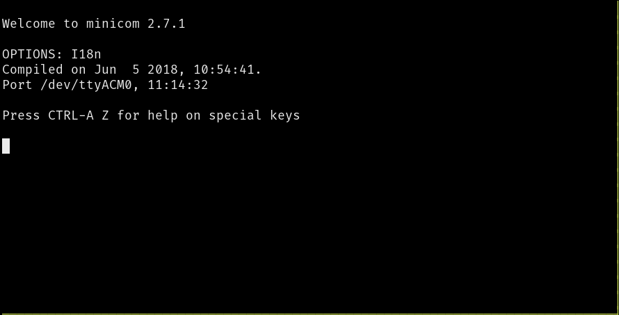

Discovery
通过Rust探索微控制器的世界！
这本书是关于基于微控制器的嵌入式系统的入门课程，它使用Rust作为教学语言，而不是通常的C/C++。
范围
将涵盖以下主题（最终，我希望）：
-
如何编写、构建、刷新和调试"嵌入式"(Rust)程序。
-
微控制器中常见的功能（"外部设备"）：数字输入和输出、脉冲宽度调制 (PWM)、模数转换器 (ADC)、串行、I2C和SPI等常见通信协议。
-
多任务处理概念：协作与抢占式多任务处理、中断、调度程序等。
-
控制系统概念：传感器、校准、数字滤波器、执行器、开环控制、闭环控制等。
方法
-
初学者友好。无需具备微控制器或嵌入式系统方面的经验。
-
动手。大量的练习将理论付诸实践。您将在这里完成大部分工作。 您将在这里完成大部分工作。
-
工具居中。我们将大量使用工具来简化开发。"真正的"调试、使用GDB和日志记录将在早期引入。在这里使用LED作为调试机制是不合适的。
非目标
本书范围之外的内容：
-
教Rust。已经有很多关于该主题的材料。我们将专注于微控制器和嵌入式系统。
-
是一本关于电路理论或电子学的综合性书籍。我们将仅介绍了解某些设备如何工作所需的最低要求。
-
涵盖链接描述文件和引导过程等细节。例如，我们将使用现有工具帮助您将代码放到板上，但不会详细介绍这些工具的工作原理。
另外我们不打算将这个材料移植到其他开发板上；本书将独家使用micro:bit开发板。
报告问题
这本书的源代码在这个存储库中。如果您遇到任何错字或代码问题，请在问题跟踪器上报告。
其他嵌入式Rust资源
这本Discovery书只是嵌入式工作组提供的几个嵌入式Rust资源之一。完整的选择可以在The Embedded Rust Bookshelf中找到。这包括常见问题列表。
背景
什么是微控制器？
微控制器是单片机上的系统鉴于您的计算机由几个离散组件组成：处理器、RAM、存储、以太网端口等；微控制器将所有这些类型的组件都内置到单个"芯片"或封装中。 这使得构建具有更少部件的系统成为可能。
使用微控制器可以做什么？
许多事！微控制器是所谓的"嵌入式系统".的核心部分。嵌入式系统无处不在，但您通常不会注意到它们。他们控制着洗衣服、打印文件和做饭的机器。 嵌入式系统使您生活和工作的建筑物保持在舒适的温度下，并控制使您行驶的车辆停停走走的组件。
大多数嵌入式系统无需用户干预即可运行。即使他们像洗衣机一样暴露用户界面；他们的大部分操作都是自己完成的。
嵌入式系统通常用于控制 物理过程。为了使这成为可能，他们有一个或多个设备来告诉他们世界的状态("传感器")， 以及一个或多个允许他们改变事物的设备 ("执行器")。例如，建筑气候控制系统可能具有：
- 测量不同位置温度和湿度的传感器。
- 控制风扇速度的执行器。
- 导致热量从建筑物中添加或移除的执行器。
我什么时候应该使用微控制器？
上面列出的许多嵌入式系统都可以使用运行Linux的计算机 (例如"Raspberry Pi")来实现。为什么要改用微控制器？听起来开发程序可能更难。
一些原因可能包括：
成本。 微控制器比通用计算机便宜得多。微控制器不仅更便宜；它还需要更少的外部电气元件来操作。这使得印刷电路板 (PCB) 更小，设计和制造成本更低。
能量消耗。 大多数微控制器消耗的功率只是完整处理器的一小部分。对于依靠电池运行的应用程序，这会产生巨大的差异。
响应能力。 为了实现它们的目的，一些嵌入式系统必须始终在有限的时间间隔内做出反应（例如汽车的"防抱死"制动系统)。 如果系统错过了这种类型的最后期限， 则可能会发生灾难性故障。这样的最后期限称为"硬件实时"要求。受这种期限约束的嵌入式系统称为"硬件实时系统"。通用计算机和操作系统通常具有许多共享计算机处理资源的软件组件。 这使得在紧迫的时间限制内保证程序的执行变得更加困难。
可靠性。 在具有较少组件（硬件和软件）的系统中，出错的可能性较小！
什么时候不应该使用微控制器？
涉及繁重计算的地方。为了保持低功耗，微控制器可用的计算资源非常有限。例如，一些微控制器甚至没有对浮点运算的硬件支持。 在这些设备上，执行单精度数字的简单加法可能需要数百个 CPU 周期。
为什么使用Rust而不是C？
希望我不需要在这里说服您，因为您可能熟悉Rust和C之间的语言差异。我确实想提出一点是包管理。C缺乏官方的、被广泛接受的包管理解决方案，而Rust有Cargo。 这使得开发更加容易。而且，IMO，简单的包管理鼓励代码重用，因为库可以很容易地集成到应用程序中，这也是一件好事，因为库得到了更多的"战斗测试"。
为什么我不应该使用Rust？
或者为什么我应该更喜欢C而不是Rust？
C生态系统更加成熟。针对几个问题的现成解决方案已经存在。如果您需要控制对时间敏感的过程，您可以使用现有的商业实时操作系统 (RTOS) 之一来解决您的问题。 Rust中还没有商业的生产级RTOS，因此您必须自己创建一个或尝试其中一个正在开发中的RTOS。您可以在Awesome Embedded Rust存储库中找到这些列表。
硬件 / 知识要求
阅读本书的主要知识要求是了解一些Rust。我们很难量化一些，但至少我可以告诉你，你不需要完全理解泛型，但你需要知道如何使用闭包。
您还需要熟悉2018 版的语法，extern crate尤其是在2018版中不需要的事实。
此外，要遵循本材料，您需要以下硬件：
- 一个micro:bit v2板，或者一个micro:bit v1.5板，本书将v1.5称为v1。

注意 这是micro:bit v2的图像，v1的正面看起来略有不同
- 一根micro-B USB电缆，需要使micro:bit板工作。确保数据线支持数据传输，因为某些数据线仅支持充电设备。

注意 您可能已经拥有这样的电缆，因为某些micro:bit套件随附此类电缆。 一些用于为移动设备充电的USB电缆也可以工作， 如果它们是micro-B并且具有传输数据的能力。
常见问题解答：等等，为什么我需要这个特定的硬件？
它让我和你的生活更轻松。
如果我们不必担心硬件差异，那么材料就更容易接近了。相信我这个。
常见问题解答：我可以使用不同的开发板遵循此材料吗？
也许？这主要取决于两件事：您以前使用微控制器的经验和/或是否已经存在高级板条箱，例如nrf52-hal，您的开发板的某个地方。
如果您打算使用其他微控制器，可以查看Awesome Embedded Rust HAL list。
使用不同的开发板，本文将失去大部分（如果不是全部）初学者友好性和"易于理解"，IMO。
如果您有不同的开发板并且您不认为自己完全是初学者，那么您最好从快速入门项目模板开始。
设置开发环境
处理微控制器涉及多种工具，因为我们将处理与您的计算机不同的架构，并且我们必须在"远程"设备上运行和调试程序。
文档
不过，工具并不是万能的。没有文档，几乎不可能使用微控制器。
我们将在本书中引用所有这些文档：
工具
我们将使用下面列出的所有工具。在未指定最低版本的情况下，任何最新版本都可以使用，但我们列出了我们测试过的版本。
-
Rust 1.57.0或更新的工具链。
-
gdb-multiarch。测试版本：10.2。其他版本很可能也可以正常工作，但如果您的发行版/平台不同gdb-multiarch用arm-none-eabi-gdb，也可以解决问题。 此外，一些普通gdb的二进制文件也具有多架构功能，您可以在子章节中找到有关此的更多信息。 -
cargo-binutils。版本0.3.3或更高版本。
cargo-embed。版本0.24.0或更高版本。
-
minicom在Linux和macOS上。测试版本：2.7.1。其他版本很可能也能正常工作 -
PuTTY在Windows上。
接下来，按照与操作系统无关的安装说明获取一些工具：
rustc & Cargo
按照https://rustup.rs上的说明安装rustup。
如果您已经安装了rustup，请仔细检查您是否在稳定通道上，并且您的稳定工具链是最新的。
rustc -V应该返回一个比下面显示的日期新的日期：
$ rustc -V
rustc 1.53.0 (53cb7b09b 2021-06-17)
cargo-binutils
$ rustup component add llvm-tools
$ cargo install cargo-binutils --vers 0.3.3
$ cargo size --version
cargo-size 0.3.3
cargo-embed
为了安装cargo-embed，首先安装其先决条件, (注意：这些说明是通用的probe-rs嵌入式调试工具包的一部分). 然后将其与Cargo一起安装：
$ cargo install probe-rs-tools --vers 0.24.0
$ cargo embed --version
cargo-embed 0.24.0 (git commit: crates.io)
这个存储库
由于本书还包含一些在各个章节中使用的小型Rust代码库，因此您还必须下载其源代码。您可以通过以下方式之一执行此操作：
- 访问存储库，单击绿色的"Code"按钮，然后单击"Download Zip"下载。
- 使用git从与zip方法中链接的相同存储库中克隆它（如果您知道git，您可能已经安装了它）。
操作系统特定说明
现在按照特定于您使用的操作系统的说明进行操作：
Linux
以下是一些 Linux 发行版的安装命令。
Ubuntu 20.04 或最新版本 / Debian 10 或最新版本
注意
gdb-multiarch是您将用于调试ARM Cortex-M程序的GDB命令
$ sudo apt-get install \
gdb-multiarch \
minicom
Fedora 32 或最新版本
注意
gdb是您将用于调试 ARM Cortex-M程序的GDB命令 Cortex-M programs
$ sudo dnf install \
gdb \
minicom
Arch Linux
注意
arm-none-eabi-gdb是您将用于调试ARM Cortex-M程序的GDB命令
$ sudo pacman -S \
arm-none-eabi-gdb \
minicom
其他发行版
注意
arm-none-eabi-gdb是您将用于调试ARM Cortex-M程序的GDB命令
对于没有ARM预构建工具链软件包的发行版，
请下载"Linux 64-bit"文件并将其bin目录放在您的路径中。
这是一种方法：
$ mkdir -p ~/local && cd ~/local
$ tar xjf /path/to/downloaded/file/gcc-arm-none-eabi-9-2020-q2-update-x86_64-linux.tar.bz2
然后，使用您选择的编辑器在适当的shell初始化文件(例如 ~/.zshrc 或 ~/.bashrc)中附加到PATH：
PATH=$PATH:$HOME/local/gcc-arm-none-eabi-9-2020-q2-update/bin
udev 规则
这些规则让您可以在没有root权限的情况下使用像micro:bit这样的USB设备，即sudo。
/etc/udev/rules.d使用如下所示的内容创建此文件。
$ cat /etc/udev/rules.d/69-microbit.rules
# CMSIS-DAP for microbit
ACTION!="add|change", GOTO="microbit_rules_end"
SUBSYSTEM=="usb", ATTR{idVendor}=="0d28", ATTR{idProduct}=="0204", TAG+="uaccess"
LABEL="microbit_rules_end"
然后使用以下命令重新加载udev规则：
$ sudo udevadm control --reload
如果您的计算机上插入了任何板，请拔下它们，然后重新插入，或者运行下面的命令：
$ sudo udevadm trigger
现在，转到下一节。
Windows
arm-none-eabi-gdb
ARM.exe为Windows提供安装程序。从从下载，然后按照说明进行操作。就在安装过程完成之前
勾选/选择"Add path to environment variable"选项。然后验证这些工具是否在您的%PATH%：
$ arm-none-eabi-gcc -v
(..)
gcc version 5.4.1 20160919 (release) (..)
PuTTY
putty.exe从该站点下载最新版本并将其放在您的%PATH%。
现在，转到下一节。
macOS
所有工具都可以使用Homebrew安装：
$ # ARM GCC debugger
$ brew install arm-none-eabi-gdb
$ # Minicom
$ brew install minicom
就这样！转到下一节。
验证安装
让我们验证所有工具是否已正确安装。
仅限Linux
验证权限
使用USB数据线将micro:bit连接到您的计算机。
micro:bit现在应该以USB设备（文件）的形式出现在/dev/bus/usb。让我们看看它是如何被枚举的：
$ lsusb | grep -i "NXP ARM mbed"
Bus 001 Device 065: ID 0d28:0204 NXP ARM mbed
$ # ^^^ ^^^
在我的例子中，micro:bit连接到总线#1被枚举为设备#65。这意味着该文件/dev/bus/usb/001/065是micro:bit。
让我们检查这个文件的权限：
$ ls -l /dev/bus/usb/001/065
crw-rw-r--+ 1 nobody nobody 189, 64 Sep 5 14:27 /dev/bus/usb/001/065
权限应该是crw-rw-r--+，注意最后的+号，然后运行以下命令查看您的访问权限。
$ getfacl /dev/bus/usb/001/065
getfacl: Removing leadin '/' from absolute path names
# file: dev/bus/usb/001/065
# owner: nobody
# group: nobody
user::rw-
user:<YOUR-USER-NAME>:rw-
group::rw-
mask::rw-
other::r-
您应该在上述列表中看到您的用户名带有rw-权限，如果不是...然后检查您的udev规则并尝试重新加载它们：
$ sudo udevadm control --reload
$ sudo udevadm trigger
全部
验证cargo-embed
首先，使用USB数据线将micro:bit连接到您的计算机。
micro:bit的USB端口旁边至少有一个橙色LED应该亮起。此外，如果您从未在micro:bit上刷过其他程序， 则micro:bit附带的默认程序应该开始闪烁其背面的红色LED，您可以忽略它们。
现在查看一下probe-rs及其中的cargo-embed是否可以发现micro:bit，使用以下命令：
$ probe-rs list
The following debug probes were found:
[0]: BBC micro:bit CMSIS-DAP -- 0d28:0204:990636020005282030f57fa14252d446000000006e052820 (CMSIS-DAP)
如果需要更多有关micro:bit调试能力的信息，可以运行:
$ probe-rs info
Probing target via JTAG
Error identifying target using protocol JTAG: The probe does not support the JTAG protocol.
Probing target via SWD
ARM Chip with debug port Default:
Debug Port: DPv1, DP Designer: ARM Ltd
├── 0 MemoryAP
│ └── ROM Table (Class 1), Designer: Nordic VLSI ASA
│ ├── Cortex-M4 SCS (Generic IP component)
│ │ └── CPUID
│ │ ├── IMPLEMENTER: ARM Ltd
│ │ ├── VARIANT: 0
│ │ ├── PARTNO: Cortex-M4
│ │ └── REVISION: 1
│ ├── Cortex-M3 DWT (Generic IP component)
│ ├── Cortex-M3 FBP (Generic IP component)
│ ├── Cortex-M3 ITM (Generic IP component)
│ ├── Cortex-M4 TPIU (Coresight Component)
│ └── Cortex-M4 ETM (Coresight Component)
└── 1 Unknown AP (Designer: Nordic VLSI ASA, Class: Undefined, Type: 0x0, Variant: 0x0, Revision: 0x0)
Debugging RISC-V targets over SWD is not supported. For these targets, JTAG is the only supported protocol. RISC-V specific information cannot be printed.
Debugging Xtensa targets over SWD is not supported. For these targets, JTAG is the only supported protocol. Xtensa specific information cannot be printed.
接下来，您将不得不在本书的源代码src/03-setup目录中进行修改Embed.toml。
在该default.general部分中，您将找到两个已注释掉的芯片的变量：
[default.general]
# chip = "nrf52833_xxAA" # uncomment this line for micro:bit V2
# chip = "nrf51822_xxAA" # uncomment this line for micro:bit V1
如果您使用的是micro:bit v2板，请取消注释第一行，对于v1，请取消注释第二行。
接下来运行以下命令之一：
$ # make sure you are in src/03-setup of the books source code
$ # If you are working with micro:bit v2
$ rustup target add thumbv7em-none-eabihf
$ cargo embed --target thumbv7em-none-eabihf
$ # If you are working with micro:bit v1
$ rustup target add thumbv6m-none-eabi
$ cargo embed --target thumbv6m-none-eabi
如果一切正常，cargo-embed应该首先编译这个目录中的小示例程序，然后刷新它， 最后打开一个漂亮的基于文本的用户界面，打印Hello World。
(如果没有，请查看一般故障排除说明。)
此输出来自您刚刚嵌入micro:bit的小型Rust程序。一切正常，您可以继续下一章！
充分利用您的IDE
本书中的所有代码都假定您使用一个简单的终端来构建您的代码，运行它，并与之交互。 它也不对您的文本编辑器做任何假设。
然而，您可能拥有自己喜欢的IDE，它们为您提供自动完成、类型注释、您喜欢的快捷方式等等。 本节解释了如何使用从本书的代码库中获得的代码来充分利用您的IDE。
自动补全，类型注解，以及更多
一些IDE无法理解代码，因为它们无法确定一个术语是在microbit还是microbit-v2代码库中定义的。
如果您无法使用自动完成功能，您可能想尝试编辑本书中遇到的Cargo.toml文件，并删除所有您不使用的microbit版本的引用。
也就是说：在Cargo.toml文件中，您必须移除您不使用的依赖项和特性（由#[cfg(feature = "vI")]保护的部分及其本身）
IDE 配置
下面，我们解释了如何配置您的IDE以充分利用本书。 如果您的IDE没有列在下面，请通过添加一节来改进本书，以便下一个读者能够获得最佳体验。
如何在IntelliJ中构建
在编辑IntelliJ构建配置时，这里有一些非默认值：
- 您应该编辑命令。当本书告诉您运行
cargo embed FLAGS时， 您需要将默认值run替换为命令embed FLAGS， - 您应该启用"Emulate terminal in output console"。否则，您的程序将无法打印文本到终端
- 您需要确保工作目录是
microbit/src/N-name，其中N-name是您正在阅读的章节的目录。您不能从src目录运行，因为它不包含cargo文件。
满足您的硬件
让我们熟悉我们将使用的硬件。
micro:bit

以下是micro:bit板上的许多组件中的一些：
在这些组件中，最重要的是微控制器（有时简称为"MCU"，表示"微控制器单元"），它是位于带有USB端口的电路板侧面的两个黑色方块中较大的一个。 MCU运行您的代码。您有时可能会读到"对电路板进行编程"，而实际上我们正在做的是对安装在电路板上的MCU进行编程。
如果您碰巧对开发板的更详细描述感兴趣，可以查看micro:bit网站。
由于MCU如此重要，让我们仔细看看我们板上的那个。请注意，以下两个部分中只有一个适用于您的电路板，具体取决于您使用的是micro:bit v2 还是 v1。
北欧nRF52833 (the "nRF52", micro:bit v2)
我们的MCU正下方有73个微小的金属引脚（它是所谓的aQFN73芯片)。这些引脚连接到迹线，即充当将电路板上的组件连接在一起的电线的小"道路"。 MCU可以动态改变引脚的电气特性。这类似于改变电流如何流过电路的电灯开关。通过启用或禁用流过特定引脚的电流，可以打开和关闭连接到该引脚（通过迹线）的LED。
每个制造商使用不同的零件编号方案，但许多制造商允许您通过查看零件编号来确定有关组件的信息。
看我们MCU的零件编号 (N52833 QIAAA0 2024AL，可能肉眼看不到，但它在芯片上），n前面的暗示我们这是
Nordic Semiconductor制造的零件。在他们的网站上查找零件号，我们很快就找到了产品页面。在那里我们
了解到我们芯片的主要营销点是它是"蓝牙低功耗和2.4 GHz SoC"（SoC 是"System on a Chip"的缩写），这解释
了产品名称中的RF，因为RF是无线电的缩写频率。如果我们搜索产品页面上链接的芯片文档我们找到了包含第10章"订购信息"的
产品规格，专门用于解释奇怪的芯片命名。在这里我们了解到：
N52是MCU的系列，表示还有其他nRF52MCUs833是零件代码QI是包代码，缩写是aQFN73AA是变体代码，表示MCU有多少RAM和闪存，在我们的例子中是512 KB闪存和128 KB RAMA0是构建代码，指示硬件版本 (A) 以及产品配置 (0)2024AL是一个跟踪代码，因此它可能在您的芯片上有所不同
产品规格当然包含有关芯片的更多有用信息，例如它基于ARM® Cortex™-M4 32位处理器。
Arm? Cortex-M4?
如果我们的芯片是Nordic制造的，那么Arm是谁？如果我们的芯片是nRF52833, 那么Cortex-M4是什么？
您可能会惊讶地发现，虽然"基于Arm"的芯片非常受欢迎，但"Arm"商标背后的公司Arm Holdings实际上并不生产用于购买的芯片。 相反，他们的主要商业模式只是设计芯片的一部分。然后，他们会将这些设计授权给制造商，制造商反过来以物理硬件的形式实施这些设计 （可能会进行一些自己的调整），然后可以出售。Arm在这方面的战略与英特尔等公司不同，后者既设计并制造芯片。
Arm许可了一堆不同的设计。他们的"Cortex-M"系列设计主要用作微控制器的核心。例如， Cortex-M4（我们的芯片所基于的内核）专为低成本和低功耗而设计。Cortex-M7成本更高，但功能和性能更多。
幸运的是，为了本书，您不需要对不同类型的处理器或Cortex设计有太多了解。但是，希望您现在对设备的术语有更多的了解。 当您专门使用nRF51822时，您可能会发现自己正在阅读文档并使用基于Cortex-M的芯片的工具，因为nRF52833基于Cortex-M设计。
北欧 nRF51822 (the "nRF51", micro:bit v1)
我们的MCU正下方有48个微小的金属引脚（它是所谓的QFN48芯片)。这些引脚连接到迹线，即充当将电 路板上的组件连接在一起的电线的小"道路"。MCU可以动态改变引脚的电气特性。这类似于改变电流如何 流过电路的电灯开关。通过启用或禁用流过特定引脚的电流，可以打开和关闭连接到该引脚（通过迹线）的LED。
每个制造商使用不同的零件编号方案，但许多制造商允许您通过查看零件编号来确定有关组件的信息。
看我们MCU的零件编号 (N51822 QFAAH3 1951LN，可能肉眼看不到，但它在芯片上)，n前面的暗示我们这是
Nordic Semiconductor制造的零件。在他们的网站上查找零件号，我们很快就找到了产品页面。在那里
我们了解到我们芯片的主要营销点是它是"蓝牙低功耗和2.4 GHz SoC"（SoC 是"System on a Chip"的缩写）
这解释了产品名称中的RF，因为RF是无线电的缩写频率。如果我们搜索产品页面上链接的芯片文档我们找到了
包含第10章"订购信息"的产品规格，专门用于解释奇怪的芯片命名。在这里我们了解到：
N51是MCU的系列，表示还有其他nRF51MCUs822是零件代码QF是包代码，是QFN48的缩写AA是变体代码，表示MCU有多少RAM和闪存，在我们的例子中是256 KB闪存和16 KB RAMH3是构建代码，指示硬件版本 (H) 以及产品配置 (3)1951LN是一个跟踪代码，因此它可能在您的芯片上有所不同
产品规格当然包含有关芯片的更多有用信息，例如它基于ARM® Cortex™-M0 32位处理器。
Arm? Cortex-M0?
如果我们的芯片是Nordic制造的，那么Arm是谁？如果我们的芯片是nRF51822, 那么Cortex-M0是什么？
您可能会惊讶地发现，虽然"基于Arm"的芯片非常受欢迎，但"Arm"商标背后的公司(Arm Holdings)实际上并不生产用于购买的芯片。 相反，他们的主要商业模式只是设计芯片的一部分。然后，他们会将这些设计授权给制造商，制造商反过来以物理硬件的形式实施这些设计 （可能会进行一些自己的调整），然后可以出售。Arm在这方面的战略与英特尔等公司不同，后者既设计并制造芯片。
Arm许可了一堆不同的设计。他们的"Cortex-M"系列设计主要用作微控制器的核心。 例如，Cortex-M0（我们的芯片所基于的内核）专为低成本和低功耗而设计。 Cortex-M7成本更高，但功能和性能更多。
幸运的是，为了本书，您不需要对不同类型的处理器或Cortex设计有太多了解。但是，希望您现在对设备的术语有更多的了解。 当您专门使用nRF51822时，您可能会发现自己正在阅读文档并使用基于Cortex-M的芯片的工具，因为nRF51822基于Cortex-M设计。
Rust Embedded 术语
在深入研究micro:bit编程之前，让我们快速浏览一下对未来所有章节都非常重要的库和术语。
抽象层（Abstraction layers）
对于任何完全受支持的微控制器/带有微控制器的板，您通常会听到以下术语用于它们的抽象级别：
外设访问箱 (PAC)
PAC的工作是为芯片的外围设备提供一个安全的(ish)直接接口，允许您根据需要配置每一个最后一位（当然也以错误的方式）。 通常，如果更高的层不能满足您的需求或者您正在开发它们时，您只需要处理PAC。我们（毫无疑问）要使用的PAC是用于nRF52 或用于nRF51的PAC。
硬件抽象层 (HAL)
HAL的工作是在芯片的PAC之上构建，并提供一个抽象，该抽象实际上可用于不了解该芯片所有特殊行为的人。 通常，它们将整个外围设备抽象为单个结构，例如，这些结构可用于通过外围设备发送数据。 我们将分别使用nRF52-hal或nRF51-hal。
Board Support Crate (历史上称为 Board Support Package, 或 BSP)
BSP的工作是一次性抽象出整个板子 (例如micro:bit) 。这意味着它必须提供抽象来使用微控制器以及板上可能存在的传感器、LED等。 很多时候（尤其是使用定制板），您将只使用芯片的HAL并自己构建传感器的驱动程序或在crates.io上搜索它们。不过对我们来说幸运的是， micro:bit确实有一个BSP，所以我们也将在HAL之上使用它。
统一图层（Unifying the layers）
接下来我们将看看Rust Embedded world中一个非常核心的软件：embedded-hal。顾名思义，它与我们
了解的第二层抽象有关：HALs。背后的想法embedded-hal是提供一组描述行为的特征，这些特征通常在
所有 HAL 中特定外围设备的所有实现中共享。例如，人们总是希望具有能够打开或关闭引脚电源的功能。
例如打开和关闭板上的 LED。 这允许我们为温度传感器编写驱动程序，该驱动程序可以在任何embedded-hal
存在特征实现的芯片上使用， 只需以仅依赖于embedded-haltraits。以这种方式编写的驱动程序被称
为平台无关， 幸运的是，crates.io上的大多数驱动程序实际上都是平台无关的。
进一步阅读
如果您想了解有关这些抽象级别的更多信息，Franz Skarman（又名TheZoq2）在Oxidize 2020期间举行 了一次关于这个主题的演讲，名为An Overview of the Embedded Rust Ecosystem。
LED轮盘
好的，让我们从构建以下应用程序开始：
我将为您提供一个高级API来实现这个应用程序，但不要担心我们稍后会做一些低级的事情。本章的主要目标是熟悉闪烁和调试过程。
入门代码位于directory存储库src的目录中。在该目录中，还有更多以本书每一章命名的目录。这些目录中的大多数都是启动Cargo项目。
现在，跳转到src/05-led-roulette目录。检查src/main.rs文件：
#![deny(unsafe_code)] #![no_main] #![no_std] use cortex_m_rt::entry; use panic_halt as _; use microbit as _; #[entry] fn main() -> ! { let _y; let x = 42; _y = x; // infinite loop; just so we don't leave this stack frame loop {} }
微控制器程序在两个方面不同于标准程序：#![no_std]和#![no_main]。
该no_std属性表示该程序不会使用std假定底层操作系统的crate；该程序将改为使用core crate，它
的一个子集std可以在裸机系统上运行（即，没有OS抽象的系统，如文件和套接字）。
该no_main属性表示该程序不会使用标准main接口，该接口是为接收参数的命令行应用程序量身定制的。
main我们将使用crate中的entry属性cortex-m-rtcrate来定义自定义入口点，而不是标准。在这个程
序中，我们将入口点命名为"main"，但也可以使用任何其他名称。入口点函数必须有签名fn() -> !；这种类型表示
函数不能返回--这意味着程序永远不会终止。
如果你是一个细心的观察者，你也会注意到Cargo项目中有一个.cargo目录。该目录包含一个Cargo配置文件
(.cargo/config)，它调整链接过程以根据目标设备的要求调整程序的内存布局。这个修改后的链接过
程是cortex-m-rtcrate的要求。
此外，还有一个Embed.toml文件
[default.general]
# chip = "nrf52833_xxAA" # uncomment this line for micro:bit V2
# chip = "nrf51822_xxAA" # uncomment this line for micro:bit V1
[default.reset]
halt_afterwards = true
[default.rtt]
enabled = false
[default.gdb]
enabled = true
该文件提供cargo-embed：
- 我们正在使用nrf52833或nrf51822，您将再次必须从正在使用的芯片中删除注释，就像您在第3章中所做的那样。
- 我们希望在闪存之后停止芯片，这样我们的程序就不会立即跳转到循环
- 我们想禁用RTT，RTT是一种允许芯片向调试器发送文本的协议。您实际上已经看到了RTT的实际应用，它是在第3章中发送"Hello World"的协议。
- 我们要启用GDB，这将是调试过程所必需的
好的，让我们从构建这个程序开始。
构建
第一步是构建我们的"binary" crate。因为微控制器的架构与您的计算机不同，所以我们必须交叉编译。
在Rust领域进行交叉编译就像向rustc或Cargo传递一个额外的--target标志一样简单。
复杂的部分是弄清楚这个标志的参数：目标的名称。
我们已经知道micro:bit v2上的微控制器内部有一个Cortex-M4F处理器，v1上的那个是Cortex-M0。
rustc知道如何交叉编译到Cortex-M架构，并提供了几个不同的目标，涵盖了该架构中的不同处理器系列：
thumbv6m-none-eabi，适用于Cortex-M0和Cortex-M1处理器thumbv7m-none-eabi，适用于Cortex-M3处理器thumbv7em-none-eabi，适用于Cortex-M4和Cortex-M处理器thumbv7em-none-eabihf，适用于Cortex-M4F和Cortex-M7F处理器thumbv8m.main-none-eabi，适用于Cortex-M33和Cortex-M35P处理器thumbv8m.main-none-eabihf，适用于Cortex-M33F和Cortex-M35PF处理器
对于micro:bit v2，我们将使用thumbv7em-none-eabihftarget，对于v1，我们将使用thumbv6m-none-eabitarget。
在交叉编译之前，您必须为您的目标下载标准库的预编译版本（实际上是它的简化版本）。这是使用rustup:
# For micro:bit v2
$ rustup target add thumbv7em-none-eabihf
# For micro:bit v1
$ rustup target add thumbv6m-none-eabi
您只需执行上述步骤一次；每当您更新工具链时，rustup都会重新安装新的(rust-std组件)。
因此如果您在验证步骤时已经添加了必要的target，则可以跳过此步骤。
有了rust-std组件，您现在可以使用Cargo交叉编译程序：
# make sure you are in the `src/05-led-roulette` directory
# For micro:bit v2
$ cargo build --features v2 --target thumbv7em-none-eabihf
Compiling semver-parser v0.7.0
Compiling typenum v1.12.0
Compiling cortex-m v0.6.3
(...)
Compiling microbit-v2 v0.10.1
Finished dev [unoptimized + debuginfo] target(s) in 33.67s
# For micro:bit v1
$ cargo build --features v1 --target thumbv6m-none-eabi
Compiling fixed v1.2.0
Compiling syn v1.0.39
Compiling cortex-m v0.6.3
(...)
Compiling microbit v0.10.1
Finished dev [unoptimized + debuginfo] target(s) in 22.73s
注意：一定要编译这个crate而不进行优化。上面提供的Cargo.toml文件和构建命令将确保优化关闭。
好的，现在我们已经生成了一个可执行文件。这个可执行文件不会闪烁任何LED，它只是一个简化版本，我 们将在本章后面进行构建。作为健全性检查，让我们验证生成的可执行文件实际上是ARM二进制文件：
# For micro:bit v2
# equivalent to `readelf -h target/thumbv7em-none-eabihf/debug/led-roulette`
$ cargo readobj --features v2 --target thumbv7em-none-eabihf --bin led-roulette -- --file-headers
Finished dev [unoptimized + debuginfo] target(s) in 0.01s
ELF Header:
Magic: 7f 45 4c 46 01 01 01 00 00 00 00 00 00 00 00 00
Class: ELF32
Data: 2's complement, little endian
Version: 1 (current)
OS/ABI: UNIX - System V
ABI Version: 0
Type: EXEC (Executable file)
Machine: ARM
Version: 0x1
Entry point address: 0x117
Start of program headers: 52 (bytes into file)
Start of section headers: 793112 (bytes into file)
Flags: 0x5000400
Size of this header: 52 (bytes)
Size of program headers: 32 (bytes)
Number of program headers: 4
Size of section headers: 40 (bytes)
Number of section headers: 21
Section header string table index: 19
# For micro:bit v1
# equivalent to `readelf -h target/thumbv6m-none-eabi/debug/led-roulette`
$ cargo readobj --features v1 --target thumbv6m-none-eabi --bin led-roulette -- --file-headers
Finished dev [unoptimized + debuginfo] target(s) in 0.01s
ELF Header:
Magic: 7f 45 4c 46 01 01 01 00 00 00 00 00 00 00 00 00
Class: ELF32
Data: 2's complement, little endian
Version: 1 (current)
OS/ABI: UNIX - System V
ABI Version: 0
Type: EXEC (Executable file)
Machine: ARM
Version: 0x1
Entry point address: 0xC1
Start of program headers: 52 (bytes into file)
Start of section headers: 693196 (bytes into file)
Flags: 0x5000200
Size of this header: 52 (bytes)
Size of program headers: 32 (bytes)
Number of program headers: 4
Size of section headers: 40 (bytes)
Number of section headers: 22
Section header string table index: 20
接下来，我们将把程序嵌入到我们的微控制器中。
闪存
闪存是将我们的程序移动到微控制器（永久）存储器中的过程。一旦刷写完成，每次上电时，单片机都会执行刷写的程序。
在这种情况下，我们的led-roulette程序将是微控制器内存中唯一的程序。 意思是微控制器上没有其他
任何东西在运行：没有操作系统，没有"守护进程"，什么都没有。led-roulette完全控制设备。
由于cargo embed，闪存二进制文件本身非常简单。
不过，在执行该命令之前，让我们看看它实际上做了什么。如果您看一下micro:bit的侧面，USB连接器朝 上，您会注意到那里实际上有2个黑色方块 （在micro:bit v2上，有第三个也是最大的一个，它是一个扬声器），一个 是我们已经谈过的MCU，但另一个是干什么用的？另一个芯片有3个主要用途：
- 从USB连接器向我们的MCU供电
- 为我们的MCU提供一个串口转USB桥接器（我们将在后面的章节中研究）
- 作为程序/调试器（这是目前的相关目的）
基本上，该芯片充当我们的计算机（通过 USB 连接到它）和MCU（通过迹线连接到它并使用 SWD 协议与 之通信之间的桥梁。 这个桥使我们能够将新的二进制文件闪存到MCU上，通过调试器和其他东西检查它的状态。
所以让我们闪存吧！
# For micro:bit v2
$ cargo embed --features v2 --target thumbv7em-none-eabihf
(...)
Erasing sectors ✔ [00:00:00] [####################################################################################################################################################] 2.00KiB/ 2.00KiB @ 4.21KiB/s (eta 0s )
Programming pages ✔ [00:00:00] [####################################################################################################################################################] 2.00KiB/ 2.00KiB @ 2.71KiB/s (eta 0s )
Finished flashing in 0.608s
# For micro:bit v1
$ cargo embed --features v1 --target thumbv6m-none-eabi
(...)
Erasing sectors ✔ [00:00:00] [####################################################################################################################################################] 2.00KiB/ 2.00KiB @ 4.14KiB/s (eta 0s )
Programming pages ✔ [00:00:00] [####################################################################################################################################################] 2.00KiB/ 2.00KiB @ 2.69KiB/s (eta 0s )
Finished flashing in 0.614s
您会注意到cargo-embed在输出最后一行后会出现块，这是有意的，您不应该关闭它，因为我们需要在此
状态下进行下一步：调试它！此外， 您会注意到cargo build和cargo embed实际上传递了相同的标志，
这是因为cargo embed实际执行构建，然后将生成的二进制文件闪存到芯片上，因此如果您以后想要闪存，可以
在将来省去cargo build步骤。
调试
这是怎么工作的？
在调试我们的小程序之前，让我们花点时间快速了解这里实际发生的情况。在上一章中，我们已经讨论了 开发板上第二个芯片的用途以及它如何与我们的计算机通信， 但我们如何实际使用它呢？
Embed.toml中的optiondefault.gdb.enabled = true使cargo-embed在闪烁后打开了一个所谓的"GDB stub"，
这是我们的GDB可以连接到的服务器，并向其发送"在地址X设置断点"等命令。然后，服务器可以自行决定如何处理该命令。
在cargo-embedGDB stub 的情况下，它将通过USB将命令转发到板上进行调试指针，然后为我们实际与MCU通信。
让我们调试！
由于cargo-embed阻塞了我们当前的shell，我们可以简单地打开一个新的shell，然后cd回到我们的项目
目录。 一旦我们到达那里，我们首先必须像这样在gdb中打开二进制文件：
# For micro:bit v2
$ gdb target/thumbv7em-none-eabihf/debug/led-roulette
# For micro:bit v1
$ gdb target/thumbv6m-none-eabi/debug/led-roulette
注意：根据您安装的GDB，您将不得不使用不同的命令来启动它，如果您忘记了它是哪一个，请查看第三章。
注意：如果
cargo-embed在这里打印很多警告，请不要担心。到目前为止，它还没有完全实现GDB 协议，因此可能无法识别GDB发送给它的所有命令，只要它不崩溃，就可以了。
接下来我们必须连接到GDB stub。它在localhost:1337默认情况下运行，因此为了连接到它运行以下命令：
(gdb) target remote :1337
Remote debugging using :1337
0x00000116 in nrf52833_pac::{{impl}}::fmt (self=0xd472e165, f=0x3c195ff7) at /home/nix/.cargo/registry/src/github.com-1ecc6299db9ec823/nrf52833-pac-0.9.0/src/lib.rs:157
157 #[derive(Copy, Clone, Debug)]
接下来我们要做的是进入程序的主要功能。我们将首先在此处设置断点并继续执行程序，直到遇到断点：
(gdb) break main
Breakpoint 1 at 0x104: file src/05-led-roulette/src/main.rs, line 9.
Note: automatically using hardware breakpoints for read-only addresses.
(gdb) continue
Continuing.
Breakpoint 1, led_roulette::__cortex_m_rt_main_trampoline () at src/05-led-roulette/src/main.rs:9
9 #[entry]
断点可用于停止程序的正常流程。该continue命令将让程序自由运行，直到它到达断点。在这种情况下，
直到它到达main函数，因为那里有一个断点。
请注意，GDB输出显示"断点1"。请记住，我们的处理器只能使用有限数量的这些断点，因此最好注意这些消息。
如果您碰巧用完了断点， 您可以使用info break列出所有当前的断点，并使用delete <breakpoint-num>删除所需的断点。
为了获得更好的调试体验，我们将使用GDB的文本用户界面 (TUI)。要进入该模式，请在GDB shell上输入以下命令：
(gdb) layout src
注意：向Windows用户致歉。GNU ARM Embedded Toolchain附带的GDB不支持这种TUI模式
:-(。

GDB的break命令不仅适用于函数名，它还可以在某些行号处中断。如果我们想跳过第13行，我们可以简单地做：
(gdb) break 13
Breakpoint 2 at 0x110: file src/05-led-roulette/src/main.rs, line 13.
(gdb) continue
Continuing.
Breakpoint 2, led_roulette::__cortex_m_rt_main () at src/05-led-roulette/src/main.rs:13
(gdb)
您可以随时使用以下命令离开TUI模式：
(gdb) tui disable
我们现在正在_y = x语句"上"; 该语句尚未执行。这意味着x被初始化，但_y未被初始化。让我们使用print命令检查这些堆栈/局部变量：
(gdb) print x
$1 = 42
(gdb) print &x
$2 = (*mut i32) 0x20003fe8
(gdb)
正如预期的那样，x包含值42。命令print &x打印变量x的地址。这里有趣的一点是GDB输出显示了引
i32*，一个指向i32值的指针。
如果我们想逐行继续执行程序，我们可以使用next命令来做到这一点，所以让我们继续执行loop {}语句：
(gdb) next
16 loop {}
_y现在应该被初始化。
(gdb) print _y
$5 = 42
您也可以使用info locals命令，而不是逐个打印局部变量：
(gdb) info locals
x = 42
_y = 42
(gdb)
如果我们在loop {}语句的顶部再次使用next，我们将陷入困境，因为程序永远不会传递该语句。
相反，我们将使用layout asm命令切换到反汇编视图，并使用stepi一次前进一条指令。通过再次发出
layout src命令，您可以随时切换回Rust源代码视图。
NOTE: 如果您错误地使用了
next或continue命令，并且GDB卡住了，您可以通过点击Ctrl+C来取消卡住。
(gdb) layout asm

如果您不使用TUI模式，您可以使用该disassemble /m命令围绕您当前所在的行反汇编程序。
(gdb) disassemble /m
Dump of assembler code for function _ZN12led_roulette18__cortex_m_rt_main17h3e25e3afbec4e196E:
10 fn main() -> ! {
0x0000010a <+0>: sub sp, #8
0x0000010c <+2>: movs r0, #42 ; 0x2a
11 let _y;
12 let x = 42;
0x0000010e <+4>: str r0, [sp, #0]
13 _y = x;
0x00000110 <+6>: str r0, [sp, #4]
14
15 // infinite loop; just so we don't leave this stack frame
16 loop {}
=> 0x00000112 <+8>: b.n 0x114 <_ZN12led_roulette18__cortex_m_rt_main17h3e25e3afbec4e196E+10>
0x00000114 <+10>: b.n 0x114 <_ZN12led_roulette18__cortex_m_rt_main17h3e25e3afbec4e196E+10>
End of assembler dump.
看到左侧的箭头=>了吗？它显示处理器下一步将执行的指令。
如果不在TUI模式下，在每个stepi命令上，GDB将打印语句和处理器下一步将执行的指令的行号。
(gdb) stepi
16 loop {}
(gdb) stepi
16 loop {}
在我们转到更有趣的事情之前，最后一个技巧。在GDB中输入以下命令：
(gdb) monitor reset
(gdb) c
Continuing.
Breakpoint 1, led_roulette::__cortex_m_rt_main_trampoline () at src/05-led-roulette/src/main.rs:9
9 #[entry]
(gdb)
我们现在又回到了main起点！
monitor reset将重置微控制器并在程序入口点停止它。以下continue命令将让程序自由运行，直到它
到达具有断点的main函数。
当您错误地跳过了程序的一部分时，这个组合非常方便，对检查感兴趣。您可以轻松地将程序的状态回滚到其最新状态开始
细节：此
reset命令不清除或触摸RAM。该内存将保留上次运行时的值。不过，这不应该是一个问 题，除非您的程序行为取决于未初始化变量的值，但这就是未定义行为(UB)的定义。
我们完成了这个调试会话。你可以用quit命令结束它。
(gdb) quit
A debugging session is active.
Inferior 1 [Remote target] will be detached.
Quit anyway? (y or n) y
Detaching from program: $PWD/target/thumbv7em-none-eabihf/debug/led-roulette, Remote target
Ending remote debugging.
[Inferior 1 (Remote target) detached]
注意：如果您不喜欢默认的GDB CLI，请查看gdb-dashboard。它使用Python将默认的GDB CLI转换为 显示寄存器、源视图、程序集视图和其他内容的仪表板。
如果您想了解更多关于GDB的功能，请查看如何使用GDB部分。
下一步是什么？我承诺的高级API。
点亮
embedded-hal
在本章中，我们将点亮micro:bit背面的众多LED中的一个，因为这基本上是嵌入式编程的"Hello World"。
为了完成这项任务，我们将使用提供的特性之一embedded-hal，特别是OutputPin允许我们打开或关闭引脚的特性。
micro:bit LEDs
在micro:bit的背面，您可以看到一个5x5方形的LED，通常称为LED矩阵。使用这种矩阵对齐方式，我们不 必使用25个单独的引脚来驱动每个LED， 而只需使用10(5+5)个引脚来控制矩阵的哪一列和哪一行点亮。
注意：micro:bit v1团队的实现方式略有不同。他们的原理图页面说它实际上是作为3x9矩阵实现的，但有几列根本没有使用。
通常，为了确定我们必须控制哪些特定引脚以点亮特定 LED，我们现在必须分别读取micro:bit v2 原理图或micro:bit v1 原理图。 幸运的是，我们可以使用前面提到的micro:bit BSP，它将所有这些都很好地抽象出来。
居然亮了！
点亮矩阵中的LED所需的代码实际上非常简单，但需要一些设置。首先看一下，然后我们可以一步一步地进行：
#![deny(unsafe_code)] #![no_main] #![no_std] use cortex_m_rt::entry; use panic_halt as _; use microbit::board::Board; use microbit::hal::prelude::*; #[entry] fn main() -> ! { let mut board = Board::take().unwrap(); board.display_pins.col1.set_low().unwrap(); board.display_pins.row1.set_high().unwrap(); loop {} }
main函数的前几行只是做一些我们之前已经看过的基本导入和设置。但是，main函数看起来与我们现在看到的完全不同。
第一行与大多数用Rust编写的HAL在内部如何工作有关。如前所述，它们建立在拥有（在Rust意义上）芯片的所有外围设备的PAC Crate之上。
let mut board = Board::take().unwrap();基本上从PAC中获取所有这些外围设备并将它们绑定到一个变量。
在这种特定情况下，我们不仅使用HAL，而且使用整个BSP，因此这也获得了板上其他芯片的 Rust 表示的所有权。
注意：如果您想知道为什么我们必须在这里调用
unwrap()，理论上可以多次调用take()这将导致 外围设备由两个单独的变量表示，因此会出现许多可能的混淆行为，因为两个变量修改相同的资源。 为了避免这种情况，PAC的实现方式是， 如果您两次尝试使用外围设备，它会出现panic。
现在，我们可以通过将row1引脚设置为高（即打开）来点亮连接到row1，col1的LED。
我们可以将col1设置为低的原因是因为LED矩阵电路的工作方式。此外，embedded-hal的设计方式是，硬件
上的每个操作都可能返回错误，即使只是打开或关闭引脚。因为这在我们的情况下是极不可能的，所以我们可以只unwrap()结果。
测试
测试我们的小程序非常简单。先把它放到src/main.rs。然后，我们只需再次运行最后一节中的
cargo embed命令，让它像以前一样闪烁。然后打开我们的GDB并连接到GDB stub:
$ # Your GDB debug command from the last section
(gdb) target remote :1337
Remote debugging using :1337
cortex_m_rt::Reset () at /home/nix/.cargo/registry/src/github.com-1ecc6299db9ec823/cortex-m-rt-0.6.12/src/lib.rs:489
489 pub unsafe extern "C" fn Reset() -> ! {
(gdb)
如果我们现在让程序通过GDBcontinue命令运行，micro:bit背面的LED之一应该会亮起。
闪烁
Delaying
现在我们将简要介绍一下delay抽象，embedded-hal后再将其与上一章中的GPIO抽象结合起来，以最终使LED闪烁。
embedded-hal为我们提供了两个抽象来延迟我们程序的执行：DelayUs和DelayMs。
除了它们的延迟函数接受不同的单位外，它们基本上都以完全相同的方式工作。
在我们的MCU内部，存在几个所谓的"定时器"。他们可以为我们做各种关于时间的事情，包括简单地暂停 我们程序的执行一段固定的时间。 例如，一个非常简单的基于延迟的程序每秒打印一些内容可能如下所示：
#![deny(unsafe_code)]
#![no_main]
#![no_std]
use cortex_m_rt::entry;
use rtt_target::{rtt_init_print, rprintln};
use panic_rtt_target as _;
use microbit::board::Board;
use microbit::hal::timer::Timer;
use microbit::hal::prelude::*;
#[entry]
fn main() -> ! {
rtt_init_print!();
let mut board = Board::take().unwrap();
let mut timer = Timer::new(board.TIMER0);
loop {
timer.delay_ms(1000u16);
rprintln!("1000 ms passed");
}
}
注意，我们在这里将panic实现从panic_halt更改为panic_rtt_target。这将要求您取消注释Cargo.toml
中的两个RTT行，并注释panic-halt，因为Rust一次只允许一个panic实现。
为了真正看到打印，我们必须更改Embed.toml像这样：
[default.general]
# chip = "nrf52833_xxAA" # uncomment this line for micro:bit V2
# chip = "nrf51822_xxAA" # uncomment this line for micro:bit V1
[default.reset]
halt_afterwards = false
[default.rtt]
enabled = true
[default.gdb]
enabled = false
现在，在将代码放入src/main.rs和另一个cargo embed (再次使用之前使用的相同标志)
后您应该会看到"1000 ms passed"每秒从MCU发送到控制台。
闪烁
现在我们已经到了可以结合我们关于 GPIO 和延迟抽象的新知识的地步，以便真正使micro:bit 背面的LED闪烁。 生成的程序实际上只是上面一个程序和上一节中打开LED的程序的混搭，如下所示：
#![deny(unsafe_code)]
#![no_main]
#![no_std]
use cortex_m_rt::entry;
use rtt_target::{rtt_init_print, rprintln};
use panic_rtt_target as _;
use microbit::board::Board;
use microbit::hal::timer::Timer;
use microbit::hal::prelude::*;
#[entry]
fn main() -> ! {
rtt_init_print!();
let mut board = Board::take().unwrap();
let mut timer = Timer::new(board.TIMER0);
board.display_pins.col1.set_low().unwrap();
let mut row1 = board.display_pins.row1;
loop {
row1.set_low().unwrap();
rprintln!("Dark!");
timer.delay_ms(1_000_u16);
row1.set_high().unwrap();
rprintln!("Light!");
timer.delay_ms(1_000_u16);
}
}
在将代码放入src/main.rs和最后一个cargo embed（带有适当的标志）后，您应该看到我们在闪烁之前点亮的LED以及打印，
每次LED从关闭变为打开，反之亦然。
挑战
你现在已经武装好迎接挑战了！你的任务是实现我在本章开头向你展示的应用程序。
如果您不能确切地看到这里发生了什么，那么它的版本要慢得多：
由于单独使用 LED 引脚非常烦人（特别是如果您必须像这里一样使用基本上所有这些引脚）， 您可以使用BSP提供的显示API。它是这样工作的：
#![deny(unsafe_code)] #![no_main] #![no_std] use cortex_m_rt::entry; use rtt_target::rtt_init_print; use panic_rtt_target as _; use microbit::{ board::Board, display::blocking::Display, hal::{prelude::*, Timer}, }; #[entry] fn main() -> ! { rtt_init_print!(); let board = Board::take().unwrap(); let mut timer = Timer::new(board.TIMER0); let mut display = Display::new(board.display_pins); let light_it_all = [ [1, 1, 1, 1, 1], [1, 1, 1, 1, 1], [1, 1, 1, 1, 1], [1, 1, 1, 1, 1], [1, 1, 1, 1, 1], ]; loop { // Show light_it_all for 1000ms display.show(&mut timer, light_it_all, 1000); // clear the display again display.clear(); timer.delay_ms(1000_u32); } }
有了这个API，您的任务基本上归结为只需计算适当的图像矩阵并将其传递到BSP。
我的解决方案
你想出了什么解决方案？
这是我的，这可能是生成所需矩阵的最简单（但当然不是最漂亮）方法之一：
#![deny(unsafe_code)] #![no_main] #![no_std] use cortex_m_rt::entry; use rtt_target::rtt_init_print; use panic_rtt_target as _; use microbit::{ board::Board, display::blocking::Display, hal::Timer, }; const PIXELS: [(usize, usize); 16] = [ (0,0), (0,1), (0,2), (0,3), (0,4), (1,4), (2,4), (3,4), (4,4), (4,3), (4,2), (4,1), (4,0), (3,0), (2,0), (1,0) ]; #[entry] fn main() -> ! { rtt_init_print!(); let board = Board::take().unwrap(); let mut timer = Timer::new(board.TIMER0); let mut display = Display::new(board.display_pins); let mut leds = [ [0, 0, 0, 0, 0], [0, 0, 0, 0, 0], [0, 0, 0, 0, 0], [0, 0, 0, 0, 0], [0, 0, 0, 0, 0], ]; let mut last_led = (0,0); loop { for current_led in PIXELS.iter() { leds[last_led.0][last_led.1] = 0; leds[current_led.0][current_led.1] = 1; display.show(&mut timer, leds, 30); last_led = *current_led; } } }
还有一件事！检查您的解决方案在"release"模式下编译时是否也有效：
# For micro:bit v2
$ cargo embed --features v2 --target thumbv7em-none-eabihf --release
(...)
# For micro:bit v1
$ cargo embed --features v1 --target thumbv6m-none-eabi --release
(...)
如果要调试"release"模式二进制文件，则必须使用不同的 GDB 命令：
# For micro:bit v2
$ gdb target/thumbv7em-none-eabihf/release/led-roulette
# For micro:bit v1
$ gdb target/thumbv6m-none-eabi/release/led-roulette
二进制大小是我们应该时刻关注的！你的解决方案有多大？您可以使用size发布二进制文件上的命令进行检查：
# For micro:bit v2
$ cargo size --features v2 --target thumbv7em-none-eabihf -- -A
Finished dev [unoptimized + debuginfo] target(s) in 0.02s
led-roulette :
section size addr
.vector_table 256 0x0
.text 26984 0x100
.rodata 2732 0x6a68
.data 0 0x20000000
.bss 1092 0x20000000
.uninit 0 0x20000444
.debug_abbrev 33941 0x0
.debug_info 494113 0x0
.debug_aranges 23528 0x0
.debug_ranges 130824 0x0
.debug_str 498781 0x0
.debug_pubnames 143351 0x0
.debug_pubtypes 124464 0x0
.ARM.attributes 58 0x0
.debug_frame 69128 0x0
.debug_line 290580 0x0
.debug_loc 1449 0x0
.comment 109 0x0
Total 1841390
$ cargo size --features v2 --target thumbv7em-none-eabihf --release -- -A
Finished release [optimized + debuginfo] target(s) in 0.02s
led-roulette :
section size addr
.vector_table 256 0x0
.text 6332 0x100
.rodata 648 0x19bc
.data 0 0x20000000
.bss 1076 0x20000000
.uninit 0 0x20000434
.debug_loc 9036 0x0
.debug_abbrev 2754 0x0
.debug_info 96460 0x0
.debug_aranges 1120 0x0
.debug_ranges 11520 0x0
.debug_str 71325 0x0
.debug_pubnames 32316 0x0
.debug_pubtypes 29294 0x0
.ARM.attributes 58 0x0
.debug_frame 2108 0x0
.debug_line 19303 0x0
.comment 109 0x0
Total 283715
# micro:bit v1
$ cargo size --features v1 --target thumbv6m-none-eabi -- -A
Finished dev [unoptimized + debuginfo] target(s) in 0.02s
led-roulette :
section size addr
.vector_table 168 0x0
.text 28584 0xa8
.rodata 2948 0x7050
.data 0 0x20000000
.bss 1092 0x20000000
.uninit 0 0x20000444
.debug_abbrev 30020 0x0
.debug_info 373392 0x0
.debug_aranges 18344 0x0
.debug_ranges 89656 0x0
.debug_str 375887 0x0
.debug_pubnames 115633 0x0
.debug_pubtypes 86658 0x0
.ARM.attributes 50 0x0
.debug_frame 54144 0x0
.debug_line 237714 0x0
.debug_loc 1499 0x0
.comment 109 0x0
Total 1415898
$ cargo size --features v1 --target thumbv6m-none-eabi --release -- -A
Finished release [optimized + debuginfo] target(s) in 0.02s
led-roulette :
section size addr
.vector_table 168 0x0
.text 4848 0xa8
.rodata 648 0x1398
.data 0 0x20000000
.bss 1076 0x20000000
.uninit 0 0x20000434
.debug_loc 9705 0x0
.debug_abbrev 3235 0x0
.debug_info 61908 0x0
.debug_aranges 1208 0x0
.debug_ranges 5784 0x0
.debug_str 57358 0x0
.debug_pubnames 22959 0x0
.debug_pubtypes 18891 0x0
.ARM.attributes 50 0x0
.debug_frame 2316 0x0
.debug_line 18444 0x0
.comment 19 0x0
Total 208617
注意：Cargo项目已经配置为使用LTO构建发布二进制文件。
知道如何读取这个输出吗？该text部分包含程序说明。另一方面，data和bss部分包含静态分配在RAM
中的变量（static变量）。如果你还记得你的micro:bit 上的微控制器规格，你应该注意到它的闪存实际上
太小而无法包含这个二进制文件， 那么这怎么可能呢？正如我们从大小统计中看到的那样，大多数二进制
文件实际上是由调试相关部分组成的，但是这些部分不会在任何时候刷新到微控制器， 毕竟它们与执行无关。
串口通讯

这就是我们将要使用的。我希望你的电脑有一个！
不，别担心。这种连接器DE-9很久以前在PC上已经过时了。它被通用串行总线（USB）取代。 我们不会处理DE-9连接器本身，而是处理该电缆通常使用的通信协议。
那么这个串口通讯是什么？这是一种异步通信协议， 其中两个设备使用两条数据线（加上一个公共地线） 串行交换数据，一次一位。该协议是异步的，因为这两条共享线路都不承载时钟信号。相反，双方必须就在通信发生 之前沿线路发送数据的速度达成一致。该协议允许双工通信，因为数据可以同时从A发送到B以及从B发送到A。
我们将使用此协议在微控制器和您的计算机之间交换数据。现在您可能会问自己，为什么我们没有像以前 那样使用RTT。RTT是一种仅用于调试的协议。 您绝对无法找到实际使用RTT与生产中的其他设备进行通信 的设备。但是，串行通信经常使用。例如，一些GPS接收器通过串行通信发送它们接收到的定位信息。
您可能想问的下一个实际问题是：我们可以通过该协议以多快的速度发送数据？
该协议适用于帧。每帧有一个起始bit，5到9bits有效载荷（数据）和1到2个stop bits。协议的速度称为波特率。 以每秒位数 (bps) 为单位。常见的波特率有：9600、19200、38400、57600 和 115200 bps。
实际回答这个问题：在1个起始bit，8个数据bits，1个stop bit和115200bps波特率的常见配置下，理论上每 秒可以发送11,520帧。 由于每一帧都携带一个字节的数据，因此数据速率为11.52KB/s。实际上，由于通信 较慢的一侧（微控制器）的处理时间，数据速率可能会较低。
今天的计算机不支持串行通信协议。所以你不能直接将你的电脑连接到微控制器。不过幸运的是，micro:bit上的调试探针 有一个所谓的USB转串口转换器。 这意味着转换器将位于两者之间，并为微控制器提供一个串行接口，并为您的计算机提供 一个USB接口。微控制器会将您的计算机视为另一个串行设备，而您的计算机会将微控制器视为虚拟串行设备。
现在，让我们熟悉一下您的操作系统提供的串行模块和串行通信工具。选择路线：
*nix 工具
连接micro:bit板
如果您将micro:bit板连接到您的计算机，您应该会看到一个新的TTY设备出现在/dev。
$ # Linux
$ dmesg | tail | grep -i tty
[63712.446286] cdc_acm 1-1.7:1.1: ttyACM0: USB ACM device
这是USB<->串行设备。在 Linux 上，它被命名为tty* (通常是ttyACM* 或 ttyUSB*)。
在Mac OSls /dev/cu.usbmodem*上将显示串行设备。
但ttyACM0究竟是什么？当然是文件！一切都是*nix中的文件：
$ ls -l /dev/ttyACM0
crw-rw----. 1 root plugdev 166, 0 Jan 21 11:56 /dev/ttyACM0
您可以通过简单地写入此文件来发送数据：
$ echo 'Hello, world!' > /dev/ttyACM0
每当您输入此命令时，您应该会看到micro:bit上的橙色LED，就在USB端口旁边，闪烁片刻。
minicom
我们将使用程序minicom使用键盘与串行设备交互。
我们必须先配置minicom然后才能使用它。有很多方法可以做到这一点，但我们将使用.minirc.dfl主目录中的文件。创建一个包含
创建一个包含~/.minirc.dfl文件，包含以下内容：
$ cat ~/.minirc.dfl
pu baudrate 115200
pu bits 8
pu parity N
pu stopbits 1
pu rtscts No
pu xonxoff No
注意：确保此文件以换行符结尾！否则，
minicom将无法读取它。
该文件应该易于阅读（最后两行除外），但让我们逐行查看：
pu baudrate 115200。将波特率设置为115200bps。pu bits 8。每帧8位。pu parity N。无相同校验。pu stopbits 1。1个stop bit。pu rtscts No。没有硬件控制流pu xonxoff No。没有软件控制流程。
一旦这一切就绪，我们就可以启动minicom。
$ # NOTE you may need to use a different device here
$ minicom -D /dev/ttyACM0 -b 115200
这通过minicom在/dev/ttyACM0打开串行设备，并将其波特率设置为115200。将弹出基于文本的用户界面（TUI）。

您现在可以使用键盘发送数据！请输入一些内容。请注意，文本UI不会回显您键入的内容。但是，如果你 注意micro:bit顶部的黄色LED，你会注意到每当你键入某个内容时，它都会闪烁。
minicom命令
minicom通过键盘快捷键公开命令。在Linux上，快捷方式以Ctrl+A开头。 在Mac上，快捷键以Meta键开头。
以下是一些有用的命令：
Ctrl+A+Z。Minicom 命令摘要Ctrl+A+C。清除屏幕Ctrl+A+X。退出并重置Ctrl+A+Q。退出并重置
注意：Mac用户：在上述命令中，将
Ctrl+A替换为Meta。
Windows 工具
首先拔掉你的micro:bit。
在插入micro:bit之前，在终端上运行以下命令：
$ mode
它将打印连接到您的计算机的设备列表。以COM的名字开头的是串行设备。这是我们将要使用的设备。
在插入串行模块之前请注意所有COMportsmode输出。
现在，插入micro:bit并再次运行命令mode。如果您看到COM列表中出现了一个新端口，那么您就有了分
配给micro:bit串行功能的COM端口。
现在启动putty。将弹出一个GUI。

在启动屏幕上，应该打开"会话"类别，选择"串行"作为"连接类型"。在"串行线路"字段中输入上一步中获得的COM设备，例如COM3。
接下来，从左侧菜单中选择"连接/串行"类别。在这个新视图上，确保串行端口配置如下：
- "Speed (baud)": 115200
- "Data bits": 8
- "Stop bits": 1
- "Parity": None
- "Flow control": None
最后，单击打开按钮。现在将显示一个控制台：

如果您在此控制台上键入，micro:bit顶部的黄色LED将闪烁。每次按键应使LED闪烁一次。请注意，控制台 不会回显您键入的内容，因此屏幕将保持空白。
UART
微控制器有一个称为UART的外围设备，它代表通用异步接收器/发送器。该外设可以配置为使用多种通信协议，如串行通信协议。
在本章中，我们将使用串行通信在微控制器和您的计算机之间交换信息。
注意：在micro:bit v2上，我们将使用所谓的UARTE外设，它的行为就像一个普通的UART， 除了HAL必须以不同的方式与之交谈。但是，这当然不是我们关心的问题。
安装
与往常一样，从现在开始，您必须修改Embed.toml以匹配您的micro:bit版本：
[default.general]
# chip = "nrf52833_xxAA" # uncomment this line for micro:bit V2
# chip = "nrf51822_xxAA" # uncomment this line for micro:bit V1
[default.reset]
halt_afterwards = false
[default.rtt]
enabled = true
[default.gdb]
enabled = false
发送单个字节
我们的第一个任务是通过串行连接从微控制器向计算机发送一个字节。
为了做到这一点，我们将使用以下代码段（这个代码段已经在07-uart/src/main.rs中）：
#![no_main] #![no_std] use cortex_m_rt::entry; use rtt_target::rtt_init_print; use panic_rtt_target as _; #[cfg(feature = "v1")] use microbit::{ hal::prelude::*, hal::uart, hal::uart::{Baudrate, Parity}, }; #[cfg(feature = "v2")] use microbit::{ hal::prelude::*, hal::uarte, hal::uarte::{Baudrate, Parity}, }; #[cfg(feature = "v2")] mod serial_setup; #[cfg(feature = "v2")] use serial_setup::UartePort; #[entry] fn main() -> ! { rtt_init_print!(); let board = microbit::Board::take().unwrap(); #[cfg(feature = "v1")] let mut serial = { uart::Uart::new( board.UART0, board.uart.into(), Parity::EXCLUDED, Baudrate::BAUD115200, ) }; #[cfg(feature = "v2")] let mut serial = { let serial = uarte::Uarte::new( board.UARTE0, board.uart.into(), Parity::EXCLUDED, Baudrate::BAUD115200, ); UartePort::new(serial) }; nb::block!(serial.write(b'X')).unwrap(); nb::block!(serial.flush()).unwrap(); loop {} }
这里最流行的新事物显然是cfg指令，它有条件地包含/排除部分代码。这主要是因为我们希望使用常规
UART处理micro:bit v1和micro:bit v2。
您还将注意到，这是我们第一次包含一些不是来自库的代码，即serial_setup模块。它的唯一目的是为
UARTE提供一个很好的包装器，因此我们可以通过embedded_hal::serial traits。以与UART完全相同的
方式使用它。 如果您愿意，您可以查看模块的具体功能，但通常不需要理解本章。
除了这些区别之外，UART和UARTE的初始化过程非常相似，所以我们将只讨论UARTE初始化。UARTE使用以下代码进行初始化：
uarte::Uarte::new(
board.UARTE0,
board.uart.into(),
Parity::EXCLUDED,
Baudrate::BAUD115200,
);
该函数拥有Rust中的UARTE外设表示(board.UARTE0)和板上的TX/RX引脚(board.uart.into())，因此，
在使用它们时，其他人不能干扰外置设备或我们的引脚。之后，我们将两个配置选项传递给构造函数：波特率（您应该熟悉）
以及一个名为"对等"的选项。对等校验是一种允许串行通信线路检查其接收的数据在传输过程中是否损坏的方法。
我们不想在这里使用它，所以我们只是排除它。然后我们将其封装在UartePort类型中这样我们就可以以与
micro:bit v1的serial相同的方式使用它。
初始化之后，我们通过新创建的uart实例发送X。这里的block!宏就是nb::block!宏。
nb是是一个（引用其描述）"最小且可重用的非阻塞I/O层"。它允许我们编写可以在后台执行硬件操作的代码，
同时我们可以进行其他工作（非阻塞）。然而，在这种情况下和其他许多情况下，我们对做其他工作没有兴趣，所以
我们只是调用block!其将等待直到I/O操作完成并且已经成功或失败，然后正常继续执行。
最后但并非最不重要的是，我们flush()串行端口。这是因为embedded-hal::serial traits的实现者可能决定缓冲输出，
直到它接收到一定数量的要发送的字节（UARTE 实现就是这种情况）。调用flush()强制它写入当前拥有的字节，而不是等待更多。
测试
在闪烁之前，您应该确保启动minicom/PuTTY，因为我们通过串行通信接收的数据没有备份或任何东西， 我们必须实时查看。一旦您的串行监视器启动， 您可以像第5章中所述那样闪存程序：
# For micro:bit v2
$ cargo embed --features v2 --target thumbv7em-none-eabihf
(...)
# For micro:bit v1
$ cargo embed --features v1 --target thumbv6m-none-eabi
闪烁结束后，您应该会看到minicom/PuTTY终端上出现字符X，恭喜！
发送字符串
下一个任务是将整个字符串从微控制器发送到计算机。
我想让你把"The quick brown fox jumps over the lazy dog."的字符串从微控制器发送到你的计算机。
轮到你写程序了。
简单的方法和write!
简单的的方法
您可能想出了一个类似于以下的程序：
#![no_main]
#![no_std]
use cortex_m_rt::entry;
use rtt_target::rtt_init_print;
use panic_rtt_target as _;
#[cfg(feature = "v1")]
use microbit::{
hal::prelude::*,
hal::uart,
hal::uart::{Baudrate, Parity},
};
#[cfg(feature = "v2")]
use microbit::{
hal::prelude::*,
hal::uarte,
hal::uarte::{Baudrate, Parity},
};
#[cfg(feature = "v2")]
mod serial_setup;
#[cfg(feature = "v2")]
use serial_setup::UartePort;
#[entry]
fn main() -> ! {
rtt_init_print!();
let board = microbit::Board::take().unwrap();
#[cfg(feature = "v1")]
let mut serial = {
uart::Uart::new(
board.UART0,
board.uart.into(),
Parity::EXCLUDED,
Baudrate::BAUD115200,
)
};
#[cfg(feature = "v2")]
let mut serial = {
let serial = uarte::Uarte::new(
board.UARTE0,
board.uart.into(),
Parity::EXCLUDED,
Baudrate::BAUD115200,
);
UartePort::new(serial)
};
for byte in b"The quick brown fox jumps over the lazy dog.\r\n".iter() {
nb::block!(serial.write(*byte)).unwrap();
}
nb::block!(serial.flush()).unwrap();
loop {}
}
虽然这是一个完全有效的实现，但在某些时候，您可能希望拥有所有print!的所有好处！
如参数格式等。如果您想知道如何做到这一点，请继续阅读。
write!和core::fmt::Write
core::fmt::Write trait允许我们使用与使用print! 基本相同的方式实现它的任何结构在std世界。
在这种情况下，来自nrfHAL的Uart结构确实实现了core::fmt::Write，因此我们可以将之前的程序重构为：
#![no_main]
#![no_std]
use cortex_m_rt::entry;
use rtt_target::rtt_init_print;
use panic_rtt_target as _;
use core::fmt::Write;
#[cfg(feature = "v1")]
use microbit::{
hal::prelude::*,
hal::uart,
hal::uart::{Baudrate, Parity},
};
#[cfg(feature = "v2")]
use microbit::{
hal::prelude::*,
hal::uarte,
hal::uarte::{Baudrate, Parity},
};
#[cfg(feature = "v2")]
mod serial_setup;
#[cfg(feature = "v2")]
use serial_setup::UartePort;
#[entry]
fn main() -> ! {
rtt_init_print!();
let board = microbit::Board::take().unwrap();
#[cfg(feature = "v1")]
let mut serial = {
uart::Uart::new(
board.UART0,
board.uart.into(),
Parity::EXCLUDED,
Baudrate::BAUD115200,
)
};
#[cfg(feature = "v2")]
let mut serial = {
let serial = uarte::Uarte::new(
board.UARTE0,
board.uart.into(),
Parity::EXCLUDED,
Baudrate::BAUD115200,
);
UartePort::new(serial)
};
write!(serial, "The quick brown fox jumps over the lazy dog.\r\n").unwrap();
nb::block!(serial.flush()).unwrap();
loop {}
}
如果您将这个程序闪存到您的micro:bit上，您将看到它在功能上等同于您提出的基于迭代器的程序。
接收单个字节
到目前为止，我们可以将数据从微控制器发送到您的计算机。是时候尝试相反的方法了：从计算机接收数据。
幸运的是，embedded-hal再次让我们了解了这一点：
#![no_main] #![no_std] use cortex_m_rt::entry; use rtt_target::{rtt_init_print, rprintln}; use panic_rtt_target as _; #[cfg(feature = "v1")] use microbit::{ hal::prelude::*, hal::uart, hal::uart::{Baudrate, Parity}, }; #[cfg(feature = "v2")] use microbit::{ hal::prelude::*, hal::uarte, hal::uarte::{Baudrate, Parity}, }; #[cfg(feature = "v2")] mod serial_setup; #[cfg(feature = "v2")] use serial_setup::UartePort; #[entry] fn main() -> ! { rtt_init_print!(); let board = microbit::Board::take().unwrap(); #[cfg(feature = "v1")] let mut serial = { uart::Uart::new( board.UART0, board.uart.into(), Parity::EXCLUDED, Baudrate::BAUD115200, ) }; #[cfg(feature = "v2")] let mut serial = { let serial = uarte::Uarte::new( board.UARTE0, board.uart.into(), Parity::EXCLUDED, Baudrate::BAUD115200, ); UartePort::new(serial) }; loop { let byte = nb::block!(serial.read()).unwrap(); rprintln!("{}", byte); } }
与发送字节程序相比，唯一改变的部分是main()末尾的循环。在这里，我们使用embedded-hal提供的read()函数，
以等待一个字节可用并读取它。然后，我们将该字节打印到RTT调试控制台中，以查看这些东西是否实际到达。
请注意，如果您刷新此程序并开始在minicom中键入字符以将其发送给微控制器，您将只能在RTT控制台
中看到数字，因为我们没有将收到的u8转换为实际char。由于从u8到char的转换非常简单，如果您真
的想看到RTT控制台中的字符，我将把这个任务留给您。
Echo服务器
让我们将传输和接收合并到一个程序中，并编写一个echo服务器。echo服务器将接收到的相同文本发送回客户端。 对于这个应用程序，微控制器将是服务器，您和您的计算机将是客户端。
这应该很容易实现。（提示：逐字节执行）
反转字符串
好的，接下来，让服务器以他们发送的文本的反向响应客户机，让服务器变得更有趣。 每次按下ENTER键时，服务器都会响应客户端。每个服务器响应都将在新行中。
这次你需要一个buffer；您可以使用heapless::Vec。以下是开始代码：
#![no_main] #![no_std] use cortex_m_rt::entry; use core::fmt::Write; use heapless::Vec; use rtt_target::rtt_init_print; use panic_rtt_target as _; #[cfg(feature = "v1")] use microbit::{ hal::prelude::*, hal::uart, hal::uart::{Baudrate, Parity}, }; #[cfg(feature = "v2")] use microbit::{ hal::prelude::*, hal::uarte, hal::uarte::{Baudrate, Parity}, }; #[cfg(feature = "v2")] mod serial_setup; #[cfg(feature = "v2")] use serial_setup::UartePort; #[entry] fn main() -> ! { rtt_init_print!(); let board = microbit::Board::take().unwrap(); #[cfg(feature = "v1")] let mut serial = { uart::Uart::new( board.UART0, board.uart.into(), Parity::EXCLUDED, Baudrate::BAUD115200, ) }; #[cfg(feature = "v2")] let mut serial = { let serial = uarte::Uarte::new( board.UARTE0, board.uart.into(), Parity::EXCLUDED, Baudrate::BAUD115200, ); UartePort::new(serial) }; // A buffer with 32 bytes of capacity let mut buffer: Vec<u8, 32> = Vec::new(); loop { buffer.clear(); // TODO Receive a user request. Each user request ends with ENTER // NOTE `buffer.push` returns a `Result`. Handle the error by responding // with an error message. // TODO Send back the reversed string } }
我的解决方案
#![no_main] #![no_std] use cortex_m_rt::entry; use core::fmt::Write; use heapless::Vec; use rtt_target::rtt_init_print; use panic_rtt_target as _; #[cfg(feature = "v1")] use microbit::{ hal::prelude::*, hal::uart, hal::uart::{Baudrate, Parity}, }; #[cfg(feature = "v2")] use microbit::{ hal::prelude::*, hal::uarte, hal::uarte::{Baudrate, Parity}, }; #[cfg(feature = "v2")] mod serial_setup; #[cfg(feature = "v2")] use serial_setup::UartePort; #[entry] fn main() -> ! { rtt_init_print!(); let board = microbit::Board::take().unwrap(); #[cfg(feature = "v1")] let mut serial = { uart::Uart::new( board.UART0, board.uart.into(), Parity::EXCLUDED, Baudrate::BAUD115200, ) }; #[cfg(feature = "v2")] let mut serial = { let serial = uarte::Uarte::new( board.UARTE0, board.uart.into(), Parity::EXCLUDED, Baudrate::BAUD115200, ); UartePort::new(serial) }; // A buffer with 32 bytes of capacity let mut buffer: Vec<u8, 32> = Vec::new(); loop { buffer.clear(); loop { // We assume that the receiving cannot fail let byte = nb::block!(serial.read()).unwrap(); if buffer.push(byte).is_err() { write!(serial, "error: buffer full\r\n").unwrap(); break; } if byte == 13 { for byte in buffer.iter().rev().chain(&[b'\n', b'\r']) { nb::block!(serial.write(*byte)).unwrap(); } break; } } nb::block!(serial.flush()).unwrap() } }
I2C
我们刚刚看到了串行通信协议。它是一种广泛使用的协议，因为它非常简单，而且这种简单性使其易于在蓝牙和 USB 等其他协议之上实现。
然而，它的简单性也是一个缺点。更精细的数据交换，如读取数字传感器，将需要传感器供应商在其之上提出另一种协议。
(Un)幸运的是，嵌入式领域还有大量的其他通信协议。其中一些被广泛用于数字传感器。
我们使用的micro:bit板中有两个运动传感器：一个加速度计和一个磁力计。这两个传感器都封装在一个组件中，可以通过I2C总线访问。
I2C代表Inter-Integrated Circuit，是一种同步串行通信协议。它使用两条线来交换数据：一条数据线 (SDA) 和一条时钟线 (SCL)。 因为使用时钟线来同步通信，所以这是一个同步协议。

该协议使用主 从模型，其中主设备是启动和驱动与从设备通信的设备。多个设备，包括主设备和从设备， 可以同时连接到同一总线。主设备可以通过首先将其地址广播到总线来与特定的从设备通信。该地址可以 是7位或10位长。 一旦主设备开始与从设备通信，在主设备停止通信之前，其他设备都不能使用总线。
时钟线决定了数据交换的速度，它通常以100kHz（标准模式）或400kHz（快速模式）的频率运行。
通用协议
I2C协议比串行通信协议更复杂，因为它必须支持多个设备之间的通信。让我们使用示例看看它是如何工作的：
主 -> 从
如果master要向slave发送数据：
- Controller: 广播开始
- C: 广播从机地址（7 位）+ R/W（第 8 位）设置为WRITE
- Target: 响应ACK（确认）
- C: 发送一个字节
- T: 响应ACK
- 重复步骤4和5零次或多次
- C: 广播停止或（广播重启并返回（2））
注意：从机地址可以是10位而不是7位长。其他一切都不会改变。
主 <- 从
如果master要从slave读取数据：
- C: 广播开始
- C: 广播从机地址（7 位）+ R/W（第 8 位）设置为 READ
- T: 以ACK响应
- T: 发送字节
- C: 以ACK响应
- 重复步骤4和5零次或多次
- C: 广播停止或（广播重启并返回（2））
注意：从机地址可以是10位而不是7位长。其他一切都不会改变。
LSM303AGR
micro:bit上的两个运动传感器、磁力计和加速度计都封装在一个组件中：LSM303AGR集成电路。这两个传 感器可以通过I2C总线访问。每个传感器的行为类似于I2C从机，并且具有不同的地址。
每个传感器都有自己的内存，用于存储感知其环境的结果。我们与这些传感器的交互主要涉及读取它们的记忆。
这些传感器的存储器被建模为字节可寻址寄存器。这些传感器也可以配置；这是通过写入他们的注册表来 完成的。 因此，在某种意义上，这些传感器与微控制器内部的外围设备非常相似。不同的是，它们的寄存 器没有映射到微控制器的内存中。 相反，它们的寄存器必须通过I2C总线访问。
有关LSM303AGR的主要信息来源是其数据表。通读它以了解如何读取传感器的寄存器。那部分在：
第6.1.1节I2C操作 - 第38页 - LSM303AGR Data Sheet
与本书相关的文档的另一部分是寄存器的描述。那部分在：
第8节寄存器描述 - 第46页 - LSM303AGR Data Sheet
读取单个寄存器
让我们将所有理论付诸实践！
首先，我们需要知道芯片内的加速度计和磁力计的从地址，这些可以在第39页的LSM303AGR数据表中找到，它们是：
- 0011001 for the accelerometer
- 0011110 for the magnetometer
注意：请记住，这些只是地址的前7位，第8位将是决定我们是执行读取还是写入的位。
接下来我们需要一个寄存器来读取。许多I2C芯片将提供某种设备标识寄存器，供其主机读取。这样做是因
为考虑到成千上万（甚至数百万）的I2C芯片， 很可能在某一时刻，两个具有相同地址的芯片最终将被构建
（毕竟地址"仅"7位宽）。有了这个设备ID寄存器，驱动程序可以确保它确实在与LSM303AGR通信，而不是
与恰好具有相同地址的其他芯片通信。正如您可以在 LSM303AGR 的数据表（特别是第46页和第61页）
中阅读的那样，它确实提供了两个寄存器， 分别称为WHO_AM_I_A地址0x0f和WHO_AM_I_M地址0x4f
其中包含一些设备独有的位模式（A与加速度计相同，M与磁力计相同）。
现在唯一缺少的是软件部分，即microbit我们应该为此使用/the HAL crates的哪个API。但是，如果您仔
细阅读您正在使用的nRF芯片的数据表， 您很快就会发现它们实际上并没有I2C外设。不过对我们来说幸运的是，它们
有与I2C兼容的TWI（双线接口）和TWIM（取决于您使用的芯片，就像UART和UART一样）。
现在，如果我们将microbit crate中twi(m)模块的文档与我们迄今为止收集到的所有其他信息放在一起，
我们将得到这段代码来读取和打印两个设备ID：
#![deny(unsafe_code)] #![no_main] #![no_std] use cortex_m_rt::entry; use rtt_target::{rtt_init_print, rprintln}; use panic_rtt_target as _; use microbit::hal::prelude::*; #[cfg(feature = "v1")] use microbit::{ hal::twi, pac::twi0::frequency::FREQUENCY_A, }; #[cfg(feature = "v2")] use microbit::{ hal::twim, pac::twim0::frequency::FREQUENCY_A, }; const ACCELEROMETER_ADDR: u8 = 0b0011001; const MAGNETOMETER_ADDR: u8 = 0b0011110; const ACCELEROMETER_ID_REG: u8 = 0x0f; const MAGNETOMETER_ID_REG: u8 = 0x4f; #[entry] fn main() -> ! { rtt_init_print!(); let board = microbit::Board::take().unwrap(); #[cfg(feature = "v1")] let mut i2c = { twi::Twi::new(board.TWI0, board.i2c.into(), FREQUENCY_A::K100) }; #[cfg(feature = "v2")] let mut i2c = { twim::Twim::new(board.TWIM0, board.i2c_internal.into(), FREQUENCY_A::K100) }; let mut acc = [0]; let mut mag = [0]; // First write the address + register onto the bus, then read the chip's responses i2c.write_read(ACCELEROMETER_ADDR, &[ACCELEROMETER_ID_REG], &mut acc).unwrap(); i2c.write_read(MAGNETOMETER_ADDR, &[MAGNETOMETER_ID_REG], &mut mag).unwrap(); rprintln!("The accelerometer chip's id is: {:#b}", acc[0]); rprintln!("The magnetometer chip's id is: {:#b}", mag[0]); loop {} }
除了初始化之外，如果您理解前面描述的I2C协议，那么这段代码应该是直截了当的。这里的初始化与UART章节中的初始化类似。
我们将外围设备以及用于与芯片通信的引脚传递给构造器；然后是我们希望总线工作的频率，在这种情况下为100kHz（K100）。
测试
与往常一样，您必须修改Embed.toml以适合您的MCU，然后可以使用：
# For micro:bit v2
$ cargo embed --features v2 --target thumbv7em-none-eabihf
# For micro:bit v1
$ cargo embed --features v1 --target thumbv6m-none-eabi
为了测试我们的小示例程序。
使用驱动程序
正如我们在第5章中已经讨论过的，embedded-hal提供了一些抽象，可以用来编写与硬件交互的平台无关代码。
事实上， 我们在第7章和到目前为止在第8章中用于与硬件交互的所有方法都来自于由embedded-hal定义的特征。
现在，我们将首次实际使用embedded-hal提供的特性。
为我们的LSM303AGR为每个嵌入式Rust支持的平台（以及可能最终弹出的新平台）实现驱动程序是没有意义的。
为了避免这种情况，可以编写使用实现embedded-hal特征的泛型类型的驱动程序，以提供驱动程序的平台无关版本。
幸运的是，这已经在lsm303agrcrate中完成了。因此， 读取实际加速度计和磁强计值现在基本上是一种即插即用体验（再加上阅读一些文档）。
事实上是crates.io页面已经为我们提供了读取加速度计数据所需的所有信息，但使用的是Raspberry Pi。我们只需要将它适应我们的芯片：
use linux_embedded_hal::I2cdev; use lsm303agr::{AccelOutputDataRate, Lsm303agr}; fn main() { let dev = I2cdev::new("/dev/i2c-1").unwrap(); let mut sensor = Lsm303agr::new_with_i2c(dev); sensor.init().unwrap(); sensor.set_accel_odr(AccelOutputDataRate::Hz50).unwrap(); loop { if sensor.accel_status().unwrap().xyz_new_data { let data = sensor.accel_data().unwrap(); println!("Acceleration: x {} y {} z {}", data.x, data.y, data.z); } } }
因为我们已经知道如何创建实现上一页中embedded_hal::blocking::i2c特性的对象实例，所以这非常简单：
#![deny(unsafe_code)] #![no_main] #![no_std] use cortex_m_rt::entry; use rtt_target::{rtt_init_print, rprintln}; use panic_rtt_target as _; #[cfg(feature = "v1")] use microbit::{ hal::twi, pac::twi0::frequency::FREQUENCY_A, }; #[cfg(feature = "v2")] use microbit::{ hal::twim, pac::twim0::frequency::FREQUENCY_A, }; use lsm303agr::{ AccelOutputDataRate, Lsm303agr, }; #[entry] fn main() -> ! { rtt_init_print!(); let board = microbit::Board::take().unwrap(); #[cfg(feature = "v1")] let i2c = { twi::Twi::new(board.TWI0, board.i2c.into(), FREQUENCY_A::K100) }; #[cfg(feature = "v2")] let i2c = { twim::Twim::new(board.TWIM0, board.i2c_internal.into(), FREQUENCY_A::K100) }; // Code from documentation let mut sensor = Lsm303agr::new_with_i2c(i2c); sensor.init().unwrap(); sensor.set_accel_odr(AccelOutputDataRate::Hz50).unwrap(); loop { if sensor.accel_status().unwrap().xyz_new_data { let data = sensor.accel_data().unwrap(); // RTT instead of normal print rprintln!("Acceleration: x {} y {} z {}", data.x, data.y, data.z); } } }
就像最后一个片段一样，您应该可以这样尝试：
# For micro:bit v2
$ cargo embed --features v2 --target thumbv7em-none-eabihf
# For micro:bit v1
$ cargo embed --features v1 --target thumbv6m-none-eabi
此外，如果您（物理上）在您的micro:bit周围移动一点，您应该会看到正在打印的加速度数字发生了变化。
挑战
本章的挑战是构建一个通过上一章介绍的串行接口与外部世界通信的小型应用程序。 它应该能够接收命令"磁力计"和"加速度计"，然后打印相应的传感器数据作为响应。 这次将不提供模板代码，因为UART和本章已经提供了您所需的所有信息。 然而，这里有一些线索：
- 您可能对
core::str::from_utf8感兴趣，以将buffer中的字节转换为&str，因为我们需要与"magnetometer"和"accelerometer"进行比较。 - 您将（显然）必须阅读磁力计 API 的文档，但它或多或少等同于加速度计
我的解决方案
#![no_main] #![no_std] use core::str; use cortex_m_rt::entry; use rtt_target::rtt_init_print; use panic_rtt_target as _; #[cfg(feature = "v1")] use microbit::{ hal::twi, pac::twi0::frequency::FREQUENCY_A, hal::uart, hal::uart::{Baudrate, Parity}, }; #[cfg(feature = "v2")] use microbit::{ hal::twim, pac::twim0::frequency::FREQUENCY_A, hal::uarte, hal::uarte::{Baudrate, Parity}, }; use microbit::hal::prelude::*; use lsm303agr::{AccelOutputDataRate, MagOutputDataRate, Lsm303agr}; use heapless::Vec; use nb::block; use core::fmt::Write; #[cfg(feature = "v2")] mod serial_setup; #[cfg(feature = "v2")] use serial_setup::UartePort; #[entry] fn main() -> ! { rtt_init_print!(); let board = microbit::Board::take().unwrap(); #[cfg(feature = "v1")] let mut serial = { uart::Uart::new( board.UART0, board.uart.into(), Parity::EXCLUDED, Baudrate::BAUD115200, ) }; #[cfg(feature = "v2")] let mut serial = { let serial = uarte::Uarte::new( board.UARTE0, board.uart.into(), Parity::EXCLUDED, Baudrate::BAUD115200, ); UartePort::new(serial) }; #[cfg(feature = "v1")] let i2c = { twi::Twi::new(board.TWI0, board.i2c.into(), FREQUENCY_A::K100) }; #[cfg(feature = "v2")] let i2c = { twim::Twim::new(board.TWIM0, board.i2c_internal.into(), FREQUENCY_A::K100) }; let mut sensor = Lsm303agr::new_with_i2c(i2c); sensor.init().unwrap(); sensor.set_accel_odr(AccelOutputDataRate::Hz50).unwrap(); sensor.set_mag_odr(MagOutputDataRate::Hz50).unwrap(); let mut sensor = sensor.into_mag_continuous().ok().unwrap(); loop { let mut buffer: Vec<u8, 32> = Vec::new(); loop { let byte = block!(serial.read()).unwrap(); if byte == 13 { break; } if buffer.push(byte).is_err() { write!(serial, "error: buffer full\r\n").unwrap(); break; } } if str::from_utf8(&buffer).unwrap().trim() == "accelerometer" { while !sensor.accel_status().unwrap().xyz_new_data { } let data = sensor.accel_data().unwrap(); write!(serial, "Accelerometer: x {} y {} z {}\r\n", data.x, data.y, data.z).unwrap(); } else if str::from_utf8(&buffer).unwrap().trim() == "magnetometer" { while !sensor.mag_status().unwrap().xyz_new_data { } let data = sensor.mag_data().unwrap(); write!(serial, "Magnetometer: x {} y {} z {}\r\n", data.x, data.y, data.z).unwrap(); } else { write!(serial, "error: command not detected\r\n").unwrap(); } } }
LED指南针
在本节中，我们将使用micro:bit上的LED实现指南针。像正确的罗盘一样，我们的LED罗盘必须以某种方式 指向北方。它将通过打开一个外部LED来实现这一点；打开的LED应指向北方。
磁场既有大小（以高斯或特斯拉为单位）也有方向。micro:bit上的磁力计测量外部磁场的大小和方向， 但它会报告所述磁场沿其轴的分解。
磁力计具有与其关联的三个轴。X和Y轴基本上跨越作为地板的平面。Z轴指向地板"外"，因此向上。
您应该已经能够编写一个程序，在I2C章节中的RTT控制台上连续打印磁力计数据。 编写该程序后，找到您当前位置的北方。然后将您的micro:bit与该方向对齐，并观察传感器的测量结果如何。
现在将板旋转90度，同时保持与地面平行。这次你看到的X、Y 和Z值是多少？然后再次旋转90度。你看到了什么值？
校准
在使用传感器并尝试使用它开发应用程序之前要做的一件非常重要的事情是验证它的输出实际上是正确的。 如果不是这种情况，我们需要校准传感器（或者它也可能损坏，但在这种情况下不太可能）。
在我的情况下，在两个不同的micro:bit's上，没有校准的磁力计与它应该测量的值相差很大。 因此，为了本章的目的，我们将假设必须校准传感器。
校准涉及相当多的数学（矩阵），因此我们不会在这里介绍，但如果您有兴趣，本设计说明会描述该过程。
幸运的是，为构建原始软件的团队已经在这里的C++中实现了校准机制。
您可以在src/calibration.rs中找到它到Rust的翻译。在默认的src/main.rs中演示了它的用法。
校准工作方式如本视频所示：
您必须上倾斜micro:bit，直到LED矩阵上的所有LED都亮起。
如果您不想在开发期间每次重新启动应用程序时都玩游戏，请随意修改src/main.rs模板，
以便在获得第一个静态校准后使用相同的静态校准。
现在我们已经完成了传感器校准，让我们来看看实际构建这个应用程序！
Take 1
实现LED指南针的最简单方法是什么，即使它并不完美？
对于初学者，我们只关心磁场的X和Y分量，因为当您查看指南针时，您总是将它保持在水平位置，因此指南针位于XY平面上。
如果我们只看X和Y分量的符号，我们就可以确定磁场属于哪个象限。在的问题当然是4个象限代表哪个方向(北、东北等)。 为了弄清楚这一点，我们可以旋转micro:bit并观察当我们指向另一个方向时象限如何变化。
经过一番实验，我们可以发现，如果我们将micro:bit指向例如东北方向，X和Y分量始终为正。 根据这些信息，您应该能够确定其他象限代表的方向。
一旦你弄清楚象限和方向之间的关系，你应该能够从下面完成模板。
#![deny(unsafe_code)] #![no_main] #![no_std] use cortex_m_rt::entry; use panic_rtt_target as _; use rtt_target::{rprintln, rtt_init_print}; mod calibration; use crate::calibration::calc_calibration; use crate::calibration::calibrated_measurement; mod led; use led::Direction; use microbit::{display::blocking::Display, hal::Timer}; #[cfg(feature = "v1")] use microbit::{hal::twi, pac::twi0::frequency::FREQUENCY_A}; #[cfg(feature = "v2")] use microbit::{hal::twim, pac::twim0::frequency::FREQUENCY_A}; use lsm303agr::{AccelOutputDataRate, Lsm303agr, MagOutputDataRate}; #[entry] fn main() -> ! { rtt_init_print!(); let board = microbit::Board::take().unwrap(); #[cfg(feature = "v1")] let i2c = { twi::Twi::new(board.TWI0, board.i2c.into(), FREQUENCY_A::K100) }; #[cfg(feature = "v2")] let i2c = { twim::Twim::new(board.TWIM0, board.i2c_internal.into(), FREQUENCY_A::K100) }; let mut timer = Timer::new(board.TIMER0); let mut display = Display::new(board.display_pins); let mut sensor = Lsm303agr::new_with_i2c(i2c); sensor.init().unwrap(); sensor.set_mag_odr(MagOutputDataRate::Hz10).unwrap(); sensor.set_accel_odr(AccelOutputDataRate::Hz10).unwrap(); let mut sensor = sensor.into_mag_continuous().ok().unwrap(); let calibration = calc_calibration(&mut sensor, &mut display, &mut timer); rprintln!("Calibration: {:?}", calibration); rprintln!("Calibration done, entering busy loop"); loop { while !sensor.mag_status().unwrap().xyz_new_data {} let mut data = sensor.mag_data().unwrap(); data = calibrated_measurement(data, &calibration); let dir = match (data.x > 0, data.y > 0) { // Quadrant ??? (true, true) => Direction::NorthEast, // Quadrant ??? (false, true) => panic!("TODO"), // Quadrant ??? (false, false) => panic!("TODO"), // Quadrant ??? (true, false) => panic!("TODO"), }; // use the led module to turn the direction into an LED arrow // and the led display functions from chapter 5 to display the // arrow } }
解决方案 1
#![deny(unsafe_code)] #![no_main] #![no_std] use cortex_m_rt::entry; use panic_rtt_target as _; use rtt_target::{rprintln, rtt_init_print}; mod calibration; use crate::calibration::calc_calibration; use crate::calibration::calibrated_measurement; mod led; use crate::led::Direction; use crate::led::direction_to_led; use microbit::{display::blocking::Display, hal::Timer}; #[cfg(feature = "v1")] use microbit::{hal::twi, pac::twi0::frequency::FREQUENCY_A}; #[cfg(feature = "v2")] use microbit::{hal::twim, pac::twim0::frequency::FREQUENCY_A}; use lsm303agr::{AccelOutputDataRate, Lsm303agr, MagOutputDataRate}; #[entry] fn main() -> ! { rtt_init_print!(); let board = microbit::Board::take().unwrap(); #[cfg(feature = "v1")] let i2c = { twi::Twi::new(board.TWI0, board.i2c.into(), FREQUENCY_A::K100) }; #[cfg(feature = "v2")] let i2c = { twim::Twim::new(board.TWIM0, board.i2c_internal.into(), FREQUENCY_A::K100) }; let mut timer = Timer::new(board.TIMER0); let mut display = Display::new(board.display_pins); let mut sensor = Lsm303agr::new_with_i2c(i2c); sensor.init().unwrap(); sensor.set_mag_odr(MagOutputDataRate::Hz10).unwrap(); sensor.set_accel_odr(AccelOutputDataRate::Hz10).unwrap(); let mut sensor = sensor.into_mag_continuous().ok().unwrap(); let calibration = calc_calibration(&mut sensor, &mut display, &mut timer); rprintln!("Calibration: {:?}", calibration); rprintln!("Calibration done, entering busy loop"); loop { while !sensor.mag_status().unwrap().xyz_new_data {} let mut data = sensor.mag_data().unwrap(); data = calibrated_measurement(data, &calibration); let dir = match (data.x > 0, data.y > 0) { // Quadrant I (true, true) => Direction::NorthEast, // Quadrant II (false, true) => Direction::NorthWest, // Quadrant III (false, false) => Direction::SouthWest, // Quadrant IV (true, false) => Direction::SouthEast, }; // use the led module to turn the direction into an LED arrow // and the led display functions from chapter 5 to display the // arrow display.show(&mut timer, direction_to_led(dir), 100); } }
Take 2
这一次，我们将使用数学来获得磁场与磁力计的X轴和Y轴形成的精确角度。
我们将使用该atan2函数。此函数返回-PI到PI范围内的角度。下图显示了如何测量该角度：

尽管未在此图中明确显示，但X轴指向右侧，Y轴指向上方。
这是启动代码。theta,（以弧度为单位）已经计算出来。您需要根据theta的值选择要打开的LED。
#![deny(unsafe_code)]
#![no_main]
#![no_std]
use cortex_m_rt::entry;
use panic_rtt_target as _;
use rtt_target::{rprintln, rtt_init_print};
mod calibration;
use crate::calibration::calc_calibration;
use crate::calibration::calibrated_measurement;
mod led;
use crate::led::Direction;
use crate::led::direction_to_led;
// You'll find this useful ;-)
use core::f32::consts::PI;
use libm::atan2f;
use microbit::{display::blocking::Display, hal::Timer};
#[cfg(feature = "v1")]
use microbit::{hal::twi, pac::twi0::frequency::FREQUENCY_A};
#[cfg(feature = "v2")]
use microbit::{hal::twim, pac::twim0::frequency::FREQUENCY_A};
use lsm303agr::{AccelOutputDataRate, Lsm303agr, MagOutputDataRate};
#[entry]
fn main() -> ! {
rtt_init_print!();
let board = microbit::Board::take().unwrap();
#[cfg(feature = "v1")]
let i2c = { twi::Twi::new(board.TWI0, board.i2c.into(), FREQUENCY_A::K100) };
#[cfg(feature = "v2")]
let i2c = { twim::Twim::new(board.TWIM0, board.i2c_internal.into(), FREQUENCY_A::K100) };
let mut timer = Timer::new(board.TIMER0);
let mut display = Display::new(board.display_pins);
let mut sensor = Lsm303agr::new_with_i2c(i2c);
sensor.init().unwrap();
sensor.set_mag_odr(MagOutputDataRate::Hz10).unwrap();
sensor.set_accel_odr(AccelOutputDataRate::Hz10).unwrap();
let mut sensor = sensor.into_mag_continuous().ok().unwrap();
let calibration = calc_calibration(&mut sensor, &mut display, &mut timer);
rprintln!("Calibration: {:?}", calibration);
rprintln!("Calibration done, entering busy loop");
loop {
while !sensor.mag_status().unwrap().xyz_new_data {}
let mut data = sensor.mag_data().unwrap();
data = calibrated_measurement(data, &calibration);
// use libm's atan2f since this isn't in core yet
let theta = atan2f(data.y as f32, data.x as f32);
// Figure out the direction based on theta
let dir = Direction::NorthEast;
display.show(&mut timer, direction_to_led(dir), 100);
}
}
建议/提示：
- 一整圈旋转等于360度。
PI弧度相当于180度。- 如果
theta为零，指的是哪个方向？ - 如果
theta非常接近于零，指向哪个方向？ - 如果
theta持续增加，改变方向的值是什么？
解决方案 2
#![deny(unsafe_code)] #![no_main] #![no_std] use cortex_m_rt::entry; use panic_rtt_target as _; use rtt_target::{rprintln, rtt_init_print}; mod calibration; use crate::calibration::calc_calibration; use crate::calibration::calibrated_measurement; mod led; use crate::led::Direction; use crate::led::direction_to_led; // You'll find this useful ;-) use core::f32::consts::PI; use libm::atan2f; use microbit::{display::blocking::Display, hal::Timer}; #[cfg(feature = "v1")] use microbit::{hal::twi, pac::twi0::frequency::FREQUENCY_A}; #[cfg(feature = "v2")] use microbit::{hal::twim, pac::twim0::frequency::FREQUENCY_A}; use lsm303agr::{AccelOutputDataRate, Lsm303agr, MagOutputDataRate}; #[entry] fn main() -> ! { rtt_init_print!(); let board = microbit::Board::take().unwrap(); #[cfg(feature = "v1")] let i2c = { twi::Twi::new(board.TWI0, board.i2c.into(), FREQUENCY_A::K100) }; #[cfg(feature = "v2")] let i2c = { twim::Twim::new(board.TWIM0, board.i2c_internal.into(), FREQUENCY_A::K100) }; let mut timer = Timer::new(board.TIMER0); let mut display = Display::new(board.display_pins); let mut sensor = Lsm303agr::new_with_i2c(i2c); sensor.init().unwrap(); sensor.set_mag_odr(MagOutputDataRate::Hz10).unwrap(); sensor.set_accel_odr(AccelOutputDataRate::Hz10).unwrap(); let mut sensor = sensor.into_mag_continuous().ok().unwrap(); let calibration = calc_calibration(&mut sensor, &mut display, &mut timer); rprintln!("Calibration: {:?}", calibration); rprintln!("Calibration done, entering busy loop"); loop { while !sensor.mag_status().unwrap().xyz_new_data {} let mut data = sensor.mag_data().unwrap(); data = calibrated_measurement(data, &calibration); // use libm's atan2f since this isn't in core yet let theta = atan2f(data.y as f32, data.x as f32); // Figure out the direction based on theta let dir = if theta < -7. * PI / 8. { Direction::West } else if theta < -5. * PI / 8. { Direction::SouthWest } else if theta < -3. * PI / 8. { Direction::South } else if theta < -PI / 8. { Direction::SouthEast } else if theta < PI / 8. { Direction::East } else if theta < 3. * PI / 8. { Direction::NorthEast } else if theta < 5. * PI / 8. { Direction::North } else if theta < 7. * PI / 8. { Direction::NorthWest } else { Direction::West }; display.show(&mut timer, direction_to_led(dir), 100); } }
大小
我们一直在研究磁场的方向，但它的实际大小是多少？根据关于mag_data()函数的文档，我们得到的
x y z值是纳米级的。这意味着我们唯一需要计算的，就是我们的x y z值所描述的三维矢量的大小，
才能得到纳米级磁场的大小。正如你在学校所记得的，这很简单：
#![allow(unused)] fn main() { // core doesn't have this function yet so we use libm, just like with // atan2f from before. use libm::sqrtf; let magnitude = sqrtf(x * x + y * y + z * z); }
将所有这些放在一个程序中：
#![deny(unsafe_code)] #![no_main] #![no_std] use cortex_m_rt::entry; use panic_rtt_target as _; use rtt_target::{rprintln, rtt_init_print}; mod calibration; use crate::calibration::calc_calibration; use crate::calibration::calibrated_measurement; use libm::sqrtf; use microbit::{display::blocking::Display, hal::Timer}; #[cfg(feature = "v1")] use microbit::{hal::twi, pac::twi0::frequency::FREQUENCY_A}; #[cfg(feature = "v2")] use microbit::{hal::twim, pac::twim0::frequency::FREQUENCY_A}; use lsm303agr::{AccelOutputDataRate, Lsm303agr, MagOutputDataRate}; #[entry] fn main() -> ! { rtt_init_print!(); let board = microbit::Board::take().unwrap(); #[cfg(feature = "v1")] let i2c = { twi::Twi::new(board.TWI0, board.i2c.into(), FREQUENCY_A::K100) }; #[cfg(feature = "v2")] let i2c = { twim::Twim::new(board.TWIM0, board.i2c_internal.into(), FREQUENCY_A::K100) }; let mut timer = Timer::new(board.TIMER0); let mut display = Display::new(board.display_pins); let mut sensor = Lsm303agr::new_with_i2c(i2c); sensor.init().unwrap(); sensor.set_mag_odr(MagOutputDataRate::Hz10).unwrap(); sensor.set_accel_odr(AccelOutputDataRate::Hz10).unwrap(); let mut sensor = sensor.into_mag_continuous().ok().unwrap(); let calibration = calc_calibration(&mut sensor, &mut display, &mut timer); rprintln!("Calibration: {:?}", calibration); rprintln!("Calibration done, entering busy loop"); loop { while !sensor.mag_status().unwrap().xyz_new_data {} let mut data = sensor.mag_data().unwrap(); data = calibrated_measurement(data, &calibration); let x = data.x as f32; let y = data.y as f32; let z = data.z as f32; let magnitude = sqrtf(x * x + y * y + z * z); rprintln!("{} nT, {} mG", magnitude, magnitude/100.0); } }
该程序将报告磁场的大小 (强度) ，单位为纳米特斯拉 (nT) 和毫米高斯 (mG)。地球磁场的大小在
250 mG 到 650 mG之间（大小取决于你的地理位置）， 所以你应该看到一个在这个范围内或接近这个范围
的值——我看到大约340 mG。
一些问题：
如果不移动开发板，您看到了什么值？你总是看到相同的值吗？
如果旋转开发板，大小是否会改变？应该改变吗？
冲压式流量计
在本节中，我们将使用板上的加速度计。
这次我们在建什么？冲压式流量计！我们将测量你出拳的力量。实际上，你能达到的最大加速度，因为加速度是 加速度计测量的。强度和加速度是成比例的，所以这是一个很好的近似值。
正如我们在前几章中已经知道的，加速度计内置于LSM303AGR封装中。 就像磁强计一样，它可以通过I2C总线访问。它也具有与磁强计相同的坐标系。
重力上升了?
我们要做的第一件事是什么？
进行健全性检查！
您应该已经能够编写一个程序，在I2C章节中的RTT控制台上连续打印加速度计数据。 即使将电路板与地板平行且LED面朝下，您是否观察到一些有趣的事情？
你应该看到这样的情况，X和Y值都非常接近于0，而Z值大约为1000。这很奇怪，因为电路板没有移动，但其加速度不是零。
发生什么事？这一定与重力有关，对吧？ 因为重力加速度是1 g (加速度计上的1 g = 1000)。
但是重力会向下拉动物体，因此沿Z轴的加速度应该是负的而不是正的。
程序是否使Z轴向后？不，您可以测试旋转板以将重力与X轴或Y轴对齐，但加速度计测量的加速度始终指向上。
这里发生的是加速度计正在测量电路板的适当加速度 ，而不是您正在观察的加速度。这个适当的加速度是从自由落体的观察者看到的板的加速度。
自由落体的观察者以1g的加速度向地心移动；从它的角度来看，电路板实际上以1g的加速度向上移动（远离地球中心）。
这就是为什么适当的加速度指向上。这也意味着，如果板处于自由下落状态，加速度计将报告正确的零加速度。请不要在家里尝试。
是的，物理很难。让我们继续。
挑战
为了简单起见，我们将在板保持水平的情况下仅测量X轴上的加速度。这样，我们就不必处理减去我们之前
观察到的虚拟的1g，这将是困难的，因为1g可能有X，Y，Z分量，这取决于电路板的方向。
冲压式流量计必须做到以下几点：
- 默认情况下，应用程序不会"观察"电路板的加速度。
- 当检测到显著的X加速度（即加速度超过某个阈值）时，应用程序应开始新的测量。
- 在测量间隔期间，应用程序应跟踪观察到的最大加速度。
- 测量间隔结束后，应用程序必须报告观察到的最大加速度。您可以使用
rprintln!宏报告该值。
试一试，让我知道你打得有多用力 ;-).
注意：有两个额外的API应该对我们尚未讨论的任务有用。 首先是
set_accel_scale，您需要测量高g值。 其次是embedded_hal的Countdowntrait。如果您决定使用它来保持测量间隔，则必须在nb::Result类型上进行模式匹配，而不是使用我们在前几章中看到的block!宏。
我的解决方案
#![deny(unsafe_code)] #![no_main] #![no_std] use cortex_m_rt::entry; use rtt_target::{rtt_init_print, rprintln}; use panic_rtt_target as _; #[cfg(feature = "v1")] use microbit::{ hal::twi, pac::twi0::frequency::FREQUENCY_A, }; #[cfg(feature = "v2")] use microbit::{ hal::twim, pac::twim0::frequency::FREQUENCY_A, }; use lsm303agr::{ AccelScale, AccelOutputDataRate, Lsm303agr, }; use microbit::hal::timer::Timer; use microbit::hal::prelude::*; use nb::Error; #[entry] fn main() -> ! { const THRESHOLD: f32 = 0.5; rtt_init_print!(); let board = microbit::Board::take().unwrap(); #[cfg(feature = "v1")] let i2c = { twi::Twi::new(board.TWI0, board.i2c.into(), FREQUENCY_A::K100) }; #[cfg(feature = "v2")] let i2c = { twim::Twim::new(board.TWIM0, board.i2c_internal.into(), FREQUENCY_A::K100) }; let mut countdown = Timer::new(board.TIMER0); let mut delay = Timer::new(board.TIMER1); let mut sensor = Lsm303agr::new_with_i2c(i2c); sensor.init().unwrap(); sensor.set_accel_odr(AccelOutputDataRate::Hz50).unwrap(); // Allow the sensor to measure up to 16 G since human punches // can actually be quite fast sensor.set_accel_scale(AccelScale::G16).unwrap(); let mut max_g = 0.; let mut measuring = false; loop { while !sensor.accel_status().unwrap().xyz_new_data {} // x acceleration in g let g_x = sensor.accel_data().unwrap().x as f32 / 1000.0; if measuring { // Check the status of our contdown match countdown.wait() { // countdown isn't done yet Err(Error::WouldBlock) => { if g_x > max_g { max_g = g_x; } }, // Countdown is done Ok(_) => { // Report max value rprintln!("Max acceleration: {}g", max_g); // Reset max_g = 0.; measuring = false; }, // Since the nrf52 and nrf51 HAL have Void as an error type // this path cannot occur, as Void is an empty type Err(Error::Other(_)) => { unreachable!() } } } else { // If acceleration goes above a threshold, we start measuring if g_x > THRESHOLD { rprintln!("START!"); measuring = true; max_g = g_x; // The documentation notes that the timer works at a frequency // of 1 Mhz, so in order to wait for 1 second we have to // set it to 1_000_000 ticks. countdown.start(1_000_000_u32); } } delay.delay_ms(20_u8); } }
贪吃蛇游戏
在本章，我们将实现一个基本的贪吃蛇游戏，它可以在micro:bit v2上游玩。 5x5 LED矩阵作为屏幕，两个按钮作为控制。 为了实现它，我们将基于本书前面章节中的概念进行开发，也会学习一些新的外设和概念。
本章的特别之处，在于我们会使用硬件中断的概念，来实现程序同时和多个外设交互。 在嵌入式环境中，中断是实现并发的常用手段。 在开始之前，我建议您阅读Embedded Rust Book，它对对嵌入式环境下的并发做了很好的介绍。
NOTE 本章是为micro:bit v2编写的，不适用于v1。 但也欢迎您将代码移植到v1。
NOTE 在本章中，我们将使用之前章节中使用的库的更新版本。 我们将使用
microbit库的0.13.0版本（之前的章节使用的是0.12.0）。 0.13.0版本修复了一些无阻塞显示的代码中的bug，这些代码是我们会使用的。We are also going to use 我们也将使用heapless库的0.8.0版本library（之前章节中使用的是0.7.10）， 以便我们可以使用其中某些实现了Rust的core::Hashtrait的结构体。
游戏逻辑
首先，让我们先了解一下游戏逻辑。 你可能已经很熟悉贪吃蛇游戏了，它的基本思想是玩家在二维网格上操纵一条蛇。 在任何给定时间，网格的一个随机位置上有“食物”，游戏的目标是让蛇尽可能多地“吃”食物。 蛇每次吃了食物，它的长度就会增加。如果蛇撞到自己的尾巴，玩家就会输掉游戏。 在游戏的一些变体中，如果蛇撞到网格的边缘，玩家也会输掉游戏，但鉴于我们网格的尺寸较小，我们将实现一个“环绕”规则，即如果蛇从网格的一边出去，它将从相对的另一边回来。
game模块
本节的代码应该放在我们的src目录中的一个单独文件game.rs中。
#![allow(unused)] fn main() { use heapless::FnvIndexSet; /// A single point on the grid. #[derive(Debug, Copy, Clone, Eq, PartialEq, Hash)] struct Coords { // Signed ints to allow negative values (handy when checking if we have gone // off the top or left of the grid) row: i8, col: i8 } impl Coords { /// Get random coordinates within a grid. `exclude` is an optional set of /// coordinates which should be excluded from the output. fn random( rng: &mut Prng, // We define the Prng struct below exclude: Option<&FnvIndexSet<Coords, 32>> ) -> Self { let mut coords = Coords { row: ((rng.random_u32() as usize) % 5) as i8, col: ((rng.random_u32() as usize) % 5) as i8 }; while exclude.is_some_and(|exc| exc.contains(&coords)) { coords = Coords { row: ((rng.random_u32() as usize) % 5) as i8, col: ((rng.random_u32() as usize) % 5) as i8 } } coords } /// Whether the point is outside the bounds of the grid. fn is_out_of_bounds(&self) -> bool { self.row < 0 || self.row >= 5 || self.col < 0 || self.col >= 5 } } }
我们使用Coords结构体来表示网格上的坐标。
由于Coords只包含两个整数，我们可以让编译器为它派生Copytrait的实现，这样我们就可以在不用担心所有权的情况下传递Coords结构体。
我们还定义了一个关联函数：Coords::random，它可以为我们提供一个网格上的随机位置。稍后，我们将使用它来确定为蛇放置食物的位置。
为了实现这个函数，我们需要一个随机数的源。
nRF52833有一个随机数生成器（RNG）外设，说明书的6.19节是它的文档。
HAL通过microbit::hal::rng::Rng结构体为我们提供了一个简单的接口，用于访问RNG。
但它是一个阻塞接口，并且生成一个随机字节所需的时间是变化，且无法预测的。
因此，我们定义了一个伪随机数生成器(PRNG)，它使用xorshift算法来生成随机的u32值，我们可以使用它来确定放置食物的位置。
这个算法很基础，而且并非加密安全；但它很高效、易于实现，而且对于我们小小的贪吃蛇游戏已经足够。
Prng结构体需要一个初始化种子值，我们从RNG外设获取它。
#![allow(unused)] fn main() { /// A basic pseudo-random number generator. struct Prng { value: u32 } impl Prng { fn new(seed: u32) -> Self { Self {value: seed} } /// Basic xorshift PRNG function: see https://en.wikipedia.org/wiki/Xorshift fn xorshift32(mut input: u32) -> u32 { input ^= input << 13; input ^= input >> 17; input ^= input << 5; input } /// Return a pseudo-random u32. fn random_u32(&mut self) -> u32 { self.value = Self::xorshift32(self.value); self.value } } }
我们还需要定义一些enum来帮助我们管理游戏状态：移动方向、转弯方向、游戏当前状态，以及游戏特定“步骤”的结果（例如，蛇移动一次）。
#![allow(unused)] fn main() { /// Define the directions the snake can move. enum Direction { Up, Down, Left, Right } /// What direction the snake should turn. #[derive(Debug, Copy, Clone)] pub enum Turn { Left, Right, None } /// The current status of the game. pub enum GameStatus { Won, Lost, Ongoing } /// The outcome of a single move/step. enum StepOutcome { /// Grid full (player wins) Full(Coords), /// Snake has collided with itself (player loses) Collision(Coords), /// Snake has eaten some food Eat(Coords), /// Snake has moved (and nothing else has happened) Move(Coords) } }
接下来，定义一个Snake结构体，它保存蛇占据的所有坐标，以及行进方向。
我们使用队列（heapless::spsc::Queue）来保存坐标的顺序，并用一个哈希集合（heapless::FnvIndexSet）来快速地进行冲撞检测。
Snake也提供了方法用于移动。
#![allow(unused)] fn main() { use heapless::spsc::Queue; // ... struct Snake { /// Coordinates of the snake's head. head: Coords, /// Queue of coordinates of the rest of the snake's body. The end of the tail is /// at the front. tail: Queue<Coords, 32>, /// A set containing all coordinates currently occupied by the snake (for fast /// collision checking). coord_set: FnvIndexSet<Coords, 32>, /// The direction the snake is currently moving in. direction: Direction } impl Snake { fn new() -> Self { let head = Coords { row: 2, col: 2 }; let initial_tail = Coords { row: 2, col: 1 }; let mut tail = Queue::new(); tail.enqueue(initial_tail).unwrap(); let mut coord_set: FnvIndexSet<Coords, 32> = FnvIndexSet::new(); coord_set.insert(head).unwrap(); coord_set.insert(initial_tail).unwrap(); Self { head, tail, coord_set, direction: Direction::Right, } } /// Move the snake onto the tile at the given coordinates. If `extend` is false, /// the snake's tail vacates the rearmost tile. fn move_snake(&mut self, coords: Coords, extend: bool) { // Location of head becomes front of tail self.tail.enqueue(self.head).unwrap(); // Head moves to new coords self.head = coords; self.coord_set.insert(coords).unwrap(); if !extend { let back = self.tail.dequeue().unwrap(); self.coord_set.remove(&back); } } fn turn_right(&mut self) { self.direction = match self.direction { Direction::Up => Direction::Right, Direction::Down => Direction::Left, Direction::Left => Direction::Up, Direction::Right => Direction::Down } } fn turn_left(&mut self) { self.direction = match self.direction { Direction::Up => Direction::Left, Direction::Down => Direction::Right, Direction::Left => Direction::Down, Direction::Right => Direction::Up } } fn turn(&mut self, direction: Turn) { match direction { Turn::Left => self.turn_left(), Turn::Right => self.turn_right(), Turn::None => () } } } }
Game结构体保存游戏状态。
它持有Snake对象，食物的当前坐标，游戏速度（决定蛇移动间隔的时间），游戏当前状态（进行、胜利或失败），以及玩家的分数。
这个结构体包含了处理游戏步骤的方法，它们决定了蛇的下一步并据此更新游戏状态。
此外，它还包含了两个方法：game_matrix和score_matrix。
它们可以输出二维矩阵值，用于在LED矩阵上显示游戏状态，或玩家分数（我们晚点就可以看到）。
#![allow(unused)] fn main() { /// Struct to hold game state and associated behaviour pub(crate) struct Game { rng: Prng, snake: Snake, food_coords: Coords, speed: u8, pub(crate) status: GameStatus, score: u8 } impl Game { pub(crate) fn new(rng_seed: u32) -> Self { let mut rng = Prng::new(rng_seed); //let mut tail: FnvIndexSet<Coords, 32> = FnvIndexSet::new(); //tail.insert(Coords { row: 2, col: 1 }).unwrap(); let snake = Snake::new(); let food_coords = Coords::random(&mut rng, Some(&snake.coord_set)); Self { rng, snake, food_coords, speed: 1, status: GameStatus::Ongoing, score: 0 } } /// Reset the game state to start a new game. pub(crate) fn reset(&mut self) { self.snake = Snake::new(); self.place_food(); self.speed = 1; self.status = GameStatus::Ongoing; self.score = 0; } /// Randomly place food on the grid. fn place_food(&mut self) -> Coords { let coords = Coords::random(&mut self.rng, Some(&self.snake.coord_set)); self.food_coords = coords; coords } /// "Wrap around" out of bounds coordinates (eg, coordinates that are off to the /// left of the grid will appear in the rightmost column). Assumes that /// coordinates are out of bounds in one dimension only. fn wraparound(&self, coords: Coords) -> Coords { if coords.row < 0 { Coords { row: 4, ..coords } } else if coords.row >= 5 { Coords { row: 0, ..coords } } else if coords.col < 0 { Coords { col: 4, ..coords } } else { Coords { col: 0, ..coords } } } /// Determine the next tile that the snake will move on to (without actually /// moving the snake). fn get_next_move(&self) -> Coords { let head = &self.snake.head; let next_move = match self.snake.direction { Direction::Up => Coords { row: head.row - 1, col: head.col }, Direction::Down => Coords { row: head.row + 1, col: head.col }, Direction::Left => Coords { row: head.row, col: head.col - 1 }, Direction::Right => Coords { row: head.row, col: head.col + 1 }, }; if next_move.is_out_of_bounds() { self.wraparound(next_move) } else { next_move } } /// Assess the snake's next move and return the outcome. Doesn't actually update /// the game state. fn get_step_outcome(&self) -> StepOutcome { let next_move = self.get_next_move(); if self.snake.coord_set.contains(&next_move) { // We haven't moved the snake yet, so if the next move is at the end of // the tail, there won't actually be any collision (as the tail will have // moved by the time the head moves onto the tile) if next_move != *self.snake.tail.peek().unwrap() { StepOutcome::Collision(next_move) } else { StepOutcome::Move(next_move) } } else if next_move == self.food_coords { if self.snake.tail.len() == 23 { StepOutcome::Full(next_move) } else { StepOutcome::Eat(next_move) } } else { StepOutcome::Move(next_move) } } /// Handle the outcome of a step, updating the game's internal state. fn handle_step_outcome(&mut self, outcome: StepOutcome) { self.status = match outcome { StepOutcome::Collision(_) => GameStatus::Lost, StepOutcome::Full(_) => GameStatus::Won, StepOutcome::Eat(c) => { self.snake.move_snake(c, true); self.place_food(); self.score += 1; if self.score % 5 == 0 { self.speed += 1 } GameStatus::Ongoing }, StepOutcome::Move(c) => { self.snake.move_snake(c, false); GameStatus::Ongoing } } } pub(crate) fn step(&mut self, turn: Turn) { self.snake.turn(turn); let outcome = self.get_step_outcome(); self.handle_step_outcome(outcome); } /// Calculate the length of time to wait between game steps, in milliseconds. /// Generally this will get lower as the player's score increases, but need to /// be careful it cannot result in a value below zero. pub(crate) fn step_len_ms(&self) -> u32 { let result = 1000 - (200 * ((self.speed as i32) - 1)); if result < 200 { 200u32 } else { result as u32 } } /// Return an array representing the game state, which can be used to display the /// state on the microbit's LED matrix. Each `_brightness` parameter should be a /// value between 0 and 9. pub(crate) fn game_matrix( &self, head_brightness: u8, tail_brightness: u8, food_brightness: u8 ) -> [[u8; 5]; 5] { let mut values = [[0u8; 5]; 5]; values[self.snake.head.row as usize][self.snake.head.col as usize] = head_brightness; for t in &self.snake.tail { values[t.row as usize][t.col as usize] = tail_brightness } values[self.food_coords.row as usize][self.food_coords.col as usize] = food_brightness; values } /// Return an array representing the game score, which can be used to display the /// score on the microbit's LED matrix (by illuminating the equivalent number of /// LEDs, going left->right and top->bottom). pub(crate) fn score_matrix(&self) -> [[u8; 5]; 5] { let mut values = [[0u8; 5]; 5]; let full_rows = (self.score as usize) / 5; for r in 0..full_rows { values[r] = [1; 5]; } for c in 0..(self.score as usize) % 5 { values[full_rows][c] = 1; } values } } }
main文件
下面是main.rs中的代码：
#![no_main] #![no_std] mod game; use cortex_m_rt::entry; use microbit::{ Board, hal::{prelude::*, Rng, Timer}, display::blocking::Display }; use rtt_target::rtt_init_print; use panic_rtt_target as _; use crate::game::{Game, GameStatus, Turn}; #[entry] fn main() -> ! { rtt_init_print!(); let mut board = Board::take().unwrap(); let mut timer = Timer::new(board.TIMER0); let mut rng = Rng::new(board.RNG); let mut game = Game::new(rng.random_u32()); let mut display = Display::new(board.display_pins); loop { loop { // Game loop let image = game.game_matrix(9, 9, 9); // The brightness values are meaningless at the moment as we haven't yet // implemented a display capable of displaying different brightnesses display.show(&mut timer, image, game.step_len_ms()); match game.status { GameStatus::Ongoing => game.step(Turn::None), // Placeholder as we // haven't implemented // controls yet _ => { for _ in 0..3 { display.clear(); timer.delay_ms(200u32); display.show(&mut timer, image, 200); } display.clear(); display.show(&mut timer, game.score_matrix(), 1000); break } } } game.reset(); } }
初始化了电路板和它的定时器以及RNG外设后，我们初始化了一个Game结构体，以及一个microbit::display::blocking中的Display结构体。
在我们的“游戏循环”（运行在main函数中的“主循环“内部），程序重复执行以下步骤：
- 获取一个5x5的字节矩阵，它表示网格。
Game::get_matrix方法需要三个整形参数（它应该是0～9，包含上下限），它们分别表示蛇头、蛇尾和食物的亮度。 我们当前使用的基本Display不支持调节亮度，因此当前设为9即可（其他非零值也行）。 - 显示矩阵，持续时间由
Game::step_len_ms方法决定。 在当前的实现中，该方法初始时提供每个步骤间1秒的间隔，玩家每获得5分（吃掉一个食物获得1分）减少200毫秒，下限为200毫秒。 - 检查游戏状态。
如果是
Ongoing（初始值），执行游戏的一个步骤并更新游戏状态（包括其status属性）。 否则，游戏结束，闪烁当前画面三次，然后显示玩家分数（用点亮的LED数表示），最后退出游戏循环。
主循环将重复运行游戏，每次迭代后重置游戏状态。
如果你运行这个程序，你应该会看到两个LED灯在显示屏的中间偏下的位置点亮（蛇的头部在中间，它的尾部在左侧）。你还会看到另一个LED灯在板子上的某个地方点亮，代表蛇的食物。大约每秒钟，蛇会向右移动一格。
下一节，我们将增加控制蛇移动的能力。
控制
游戏的主角（蛇）由micro:bit正面的两个按钮控制。 按钮A让蛇左转，按钮B让蛇右转。
我们使用microbit::pac::interrupt宏，并发地处理按键的按下。
中断由micro:bit的GPIOTE（General Purpose Input/Output Tasks and Events）外设产生。
controls模块
本节的代码放在一个src目录下controls.rs文件中。
我们需要跟踪两个全局的可变状态：GPIOTE外设的引用，以及记录下一个要转的方向。
#![allow(unused)] fn main() { use core::cell::RefCell; use cortex_m::interrupt::Mutex; use microbit::hal::gpiote::Gpiote; use crate::game::Turn; // ... static GPIO: Mutex<RefCell<Option<Gpiote>>> = Mutex::new(RefCell::new(None)); static TURN: Mutex<RefCell<Turn>> = Mutex::new(RefCell::new(Turn::None)); }
用RefCell包裹数据，可以允许其内部可变。
关于RefCell，可以阅读这个文档，以及the Rust Book的相应章节。
RefCell又被cortex_m::interrupt::Mutex包裹，让它可以安全访问。
cortex_m crate提供的互斥锁使用了一个叫临界区段的概念。
互斥锁中的数据只能在传递给cortex_m::interrupt:free的函数或闭包中访问，这保证了函数或闭包中的代码本身不会被中断。
首先，初始化按钮：
#![allow(unused)] fn main() { use cortex_m::interrupt::free; use microbit::{ board::Buttons, pac::{self, GPIOTE} }; // ... /// Initialise the buttons and enable interrupts. pub(crate) fn init_buttons(board_gpiote: GPIOTE, board_buttons: Buttons) { let gpiote = Gpiote::new(board_gpiote); let channel0 = gpiote.channel0(); channel0 .input_pin(&board_buttons.button_a.degrade()) .hi_to_lo() .enable_interrupt(); channel0.reset_events(); let channel1 = gpiote.channel1(); channel1 .input_pin(&board_buttons.button_b.degrade()) .hi_to_lo() .enable_interrupt(); channel1.reset_events(); free(move |cs| { *GPIO.borrow(cs).borrow_mut() = Some(gpiote); unsafe { pac::NVIC::unmask(pac::Interrupt::GPIOTE); } pac::NVIC::unpend(pac::Interrupt::GPIOTE); }); } }
nRF52上的GPIOTE外设有8个"通道"，每个通道都可以连接到一个GPIO引脚，并配置为响应某些事件，包括上升沿（从低到高的信号转换）和下降沿（高到低的信号）。
一个按钮是一个GPIO引脚，当未按下时信号高，按下时信号低。
因此，按钮按下是一个下降沿。
我们将channel0连接到button_a，channel1连接到button_b，并分别让它们在下降沿（hi_to_lo）时产生事件。
我们在GPIO互斥锁中保存了一个GPIOTE外设的引用。
接着，unmask GPIOTE中断，让它们可以被硬件传播，并调用 unpend 来清除所有待处理状态的中断（这些中断可能在未被取消屏蔽之前就已经产生了）。
接下来，我们编写处理中断的代码。
我们使用microbit::pac提供的interrupt宏（对于v2而言，它是从nrf52833_hal crate重新导出的）。
我们定义一个与我们要处理的中断（可以从[这里]找到所有中断(https://docs.rs/nrf52833-hal/latest/nrf52833_hal/pac/enum.Interrupt.html)）同名的函数，并用#[interrupt]注解它。
#![allow(unused)] fn main() { use microbit::pac::interrupt; // ... #[interrupt] fn GPIOTE() { free(|cs| { if let Some(gpiote) = GPIO.borrow(cs).borrow().as_ref() { let a_pressed = gpiote.channel0().is_event_triggered(); let b_pressed = gpiote.channel1().is_event_triggered(); let turn = match (a_pressed, b_pressed) { (true, false) => Turn::Left, (false, true) => Turn::Right, _ => Turn::None }; gpiote.channel0().reset_events(); gpiote.channel1().reset_events(); *TURN.borrow(cs).borrow_mut() = turn; } }); } }
当产生GPIOTE中断时，我们检查每个按钮是否被按下。如果只有按钮A被按下，我们记录蛇应该向左转。如果只有按钮B被按下，我们记录蛇应该向右转。
在任何其他情况下，我们记录蛇不应该转弯。
相关的转向存储在TURN互斥锁中。
所有这些操作都发生在一个free块中，以确保我们在处理这个中断时不会被再次中断。
最后，我们暴露一个简单的函数来获取下一个转向。
#![allow(unused)] fn main() { /// Get the next turn (i.e., the turn corresponding to the most recently pressed button). pub fn get_turn(reset: bool) -> Turn { free(|cs| { let turn = *TURN.borrow(cs).borrow(); if reset { *TURN.borrow(cs).borrow_mut() = Turn::None } turn }) } }
这个函数简单地返回TURN互斥锁的当前值。
它接收一个布尔类型的参数：reset。
如果reset为true，则TURN的值会被重置，也就是置为Turn::None。
更新main文件
回到我们的main函数，我们需要在main循环之前添加对init_buttons的调用，并在游戏循环中，将game.step方法的占位符Turn::None参数替换为由get_turn返回的值。
#![no_main] #![no_std] mod game; mod control; use cortex_m_rt::entry; use microbit::{ Board, hal::{prelude::*, Rng, Timer}, display::blocking::Display }; use rtt_target::rtt_init_print; use panic_rtt_target as _; use crate::game::{Game, GameStatus}; use crate::control::{init_buttons, get_turn}; #[entry] fn main() -> ! { rtt_init_print!(); let mut board = Board::take().unwrap(); let mut timer = Timer::new(board.TIMER0); let mut rng = Rng::new(board.RNG); let mut game = Game::new(rng.random_u32()); let mut display = Display::new(board.display_pins); init_buttons(board.GPIOTE, board.buttons); loop { // Main loop loop { // Game loop let image = game.game_matrix(9, 9, 9); // The brightness values are meaningless at the moment as we haven't yet // implemented a display capable of displaying different brightnesses display.show(&mut timer, image, game.step_len_ms()); match game.status { GameStatus::Ongoing => game.step(get_turn(true)), _ => { for _ in 0..3 { display.clear(); timer.delay_ms(200u32); display.show(&mut timer, image, 200); } display.clear(); display.show(&mut timer, game.score_matrix(), 1000); break } } } game.reset(); } }
现在我们可以使用micro:bit的按钮来控制蛇了！
使用非阻塞显示
我们现在有一个基本功能齐全的贪吃蛇游戏。 但你可能发现，当蛇变长一些时，很难区分蛇和食物，以及判断蛇的行进方向，因为所有LED的亮度都是一样的。 让我们来解决这个问题。
microbit库提供了两种不同的LED矩阵接口：一种是我们一直在使用的、基本的、阻塞式接口，另一种是非阻塞接口，它允许你自定义每个LED的亮度。
在硬件层面上，每个LED要么是“开”的，要么是“关”的，但microbit::display::nonblocking模块通过快速开关LED来模拟每个LED的十个亮度级别。
与非阻塞接口交互的代码非常简单，并且会遵循与我们用于与按钮交互的代码类似的结构。
#![allow(unused)] fn main() { use core::cell::RefCell; use cortex_m::interrupt::{free, Mutex}; use microbit::display::nonblocking::Display; use microbit::gpio::DisplayPins; use microbit::pac; use microbit::pac::TIMER1; static DISPLAY: Mutex<RefCell<Option<Display<TIMER1>>>> = Mutex::new(RefCell::new(None)); pub(crate) fn init_display(board_timer: TIMER1, board_display: DisplayPins) { let display = Display::new(board_timer, board_display); free(move |cs| { *DISPLAY.borrow(cs).borrow_mut() = Some(display); }); unsafe { pac::NVIC::unmask(pac::Interrupt::TIMER1) } } }
首先，我们初始化一个代表LED显示的microbit::display::nonblocking::Display结构体，将其传递给板子的TIMER1和DisplayPins外设。
然后我们将显示存储在一个互斥锁中。
最后，我们取消TIMER1中断的屏蔽。
然后我们定义了几个便利函数，允许我们轻松地设置（或取消设置）要显示的图像。
#![allow(unused)] fn main() { use tiny_led_matrix::Render; // ... /// Display an image. pub(crate) fn display_image(image: &impl Render) { free(|cs| { if let Some(display) = DISPLAY.borrow(cs).borrow_mut().as_mut() { display.show(image); } }) } /// Clear the display (turn off all LEDs). pub(crate) fn clear_display() { free(|cs| { if let Some(display) = DISPLAY.borrow(cs).borrow_mut().as_mut() { display.clear(); } }) } }
display_image函数接收一张图像，并指示显示屏显示它。
就像它调用的Display::show方法一样，这个函数接收一个实现了tiny_led_matrix::Render特性的结构体。
这个特性确保了结构体包含了Display在LED矩阵上渲染它所需的数据和方法。
microbit::display::nonblocking模块提供的Render的两种实现是BitImage和GreyscaleImage。
在BitImage中，每个“像素”（或LED）要么被点亮，要么没有（就像我们使用阻塞式接口时一样），而在GreyscaleImage中，每个“像素”可以有不同的亮度。
clear_display函数正如其名，做的就是清除显示。
最后，我们使用interrupt宏来定义TIMER1中断的处理程序。
这个中断每秒触发多次，这就是允许Display快速循环不同LED的开和关，以产生不同亮度级别的错觉。
我们处理程序代码所做的就是调用Display::handle_display_event方法，它处理这个。
#![allow(unused)] fn main() { use microbit::pac::interrupt; // ... #[interrupt] fn TIMER1() { free(|cs| { if let Some(display) = DISPLAY.borrow(cs).borrow_mut().as_mut() { display.handle_display_event(); } }) } }
现在我们只需要更新我们的main函数，调用init_display并使用我们定义的新函数与我们的新显示交互。
#![no_main] #![no_std] mod game; mod control; mod display; use cortex_m_rt::entry; use microbit::{ Board, hal::{prelude::*, Rng, Timer}, display::nonblocking::{BitImage, GreyscaleImage} }; use rtt_target::rtt_init_print; use panic_rtt_target as _; use crate::control::{get_turn, init_buttons}; use crate::display::{clear_display, display_image, init_display}; use crate::game::{Game, GameStatus}; #[entry] fn main() -> ! { rtt_init_print!(); let mut board = Board::take().unwrap(); let mut timer = Timer::new(board.TIMER0).into_periodic(); let mut rng = Rng::new(board.RNG); let mut game = Game::new(rng.random_u32()); init_buttons(board.GPIOTE, board.buttons); init_display(board.TIMER1, board.display_pins); loop { loop { // Game loop let image = GreyscaleImage::new(&game.game_matrix(6, 3, 9)); display_image(&image); timer.delay_ms(game.step_len_ms()); match game.status { GameStatus::Ongoing => game.step(get_turn(true)), _ => { for _ in 0..3 { clear_display(); timer.delay_ms(200u32); display_image(&image); timer.delay_ms(200u32); } clear_display(); display_image(&BitImage::new(&game.score_matrix())); timer.delay_ms(2000u32); break } } } game.reset(); } }
还有什么需要你去探索
我们仅仅触及了表面！还有很多东西留给你去探索。
注意： 如果您正在阅读本文，并且希望帮助在发现书中添加以下任何项目的示例或练习，或任何其他相关嵌入主题，我们很乐意得到您的帮助！
如果您想提供帮助，但需要帮助或指导如何为本书提供帮助，请打开一个issue，或者打开一个添加信息的Pull Request！
关于嵌入式软件的主题
这些主题讨论了编写嵌入式软件的策略。虽然许多问题可以用不同的方式解决，但这些部分讨论了一些策略，以及它们何时有意义（或不意义）。
多任务处理
我们大部分的程序都执行一个任务。在一个没有操作系统，因此没有线程的系统中，我们如何实现多任务处理？ 有两种主要的多任务处理方法：抢先多任务处理和合作多任务处理。
在抢占式多任务处理中，当前正在执行的任务可以在任何时间点被另一个任务抢占 (中断) 。抢占时，第一个任务将被挂起， 处理器将改为执行第二个任务。 在某个时候，第一个任务将被恢复。微控制器以中断的形式为抢占提供硬件支持。 微控制器以中断的形式，为抢占提供硬件支持。 在第11章，构建贪吃蛇游戏时，就引入过中断。
在抢占式多任务处理中，当前正在执行的任务可以在任何时间点被另一个任务抢占 (中断) 。抢占时，第一个任务将被挂起， 处理器将改为执行第二个任务。 在某个时候，第一个任务将被恢复。微控制器以中断的形式为抢占提供硬件支持。
在协作多任务处理中，正在执行的任务将一直运行到挂起点。当处理器到达该挂起点时，它将停止执行当前任务，转而执行另一个任务。 在某个时刻，第一个任务将恢复。这两种多任务处理方法之间的主要区别在于，在协作多任务处理中， 在已知暂停点产生执行控制，而不是在其执行的任何点被强制抢占。
睡眠
我们所有的程序都在不断地轮询外围设备，看看是否有什么需要做的。然而，有时什么也做不了！在这些时候，微控制器应该"睡眠"。
当处理器休眠时，它停止执行指令，这节省了电源。节省电源几乎总是一个好主意，因此您的微控制器应该尽可能多地睡眠。
但是，它如何知道何时必须醒来才能执行某些操作？"中断" (见下文了解具体是什么)
是唤醒微控制器的事件之一，但也有其他事件，wfi和wfe是使处理器"睡眠"的指令。
与微控制器功能相关的主题
微控制器（如我们的nRF52/nRF51）具有许多功能。然而，许多共享类似的功能，可用于解决各种不同的问题。
这些主题讨论了其中的一些功能，以及如何在嵌入式开发中有效使用这些功能。
直接内存访问（DMA）
该外设是一种异步memcpy。如果您正在使用micro:bit v2，您实际上已经使用了它，HAL可以通过UART和TWIM外围设备为您完成这项工作。
DMA外围设备可用于执行数据的批量传输。从RAM到RAM，从外设（如UART）到RAM，或从RAM到外设。你可以安排DMA传输，比如
从UART读取256字节到这个缓冲区， 让它在后台运行，然后轮询一些寄存器，看看它是否已经完成，这样你就可以在传输过程中做其他事情。
有关如何实现的更多信息， 请参阅UART一章中的serial_setup模块。如果这还不够，您甚至可以尝试深入研究nrf52-hal的代码。
中断
为了与现实世界进行交互，微控制器通常需要在某种事件发生时立即做出响应。
微控制器具有被中断的能力，这意味着当某个事件发生时，它将停止当前正在执行的任何操作，以响应该事件。 当我们想要在按下按钮时停止电机，或者在计时器完成倒计时时测量传感器时，这非常有用。
虽然这些中断可能非常有用，但它们也可能有点难以正确使用。我们希望确保我们对事件做出快速反应，同时也允许其他工作继续进行。
在Rust中，我们对中断进行建模，类似于桌面Rust程序中的线程概念。这意味着，在主应用程序
和作为处理中断事件的一部分执行的代码之间共享数据时， 我们还必须考虑Send和Sync的Rust概念。
脉宽调制（PWM）
简而言之，PWM是在"接通时间"和"断开时间"之间保持一定比例（"占空比"）的同时，周期性地接通和断开某个部件。 当在具有足够高频率的LED上使用时， 这可用于调暗LED。低占空比，例如10%的开启时间和90%的关闭时间，将使LED非常暗淡，而高占空比 （例如90%的开启和10%的关闭） 将使LED更亮（几乎就像它完全通电一样）。
一般而言，PWM可用于控制向某些电气设备提供多少功率。通过微控制器和电机之间的适当（电力）电子 设备，PWM可用于控制给电机的功率大小， 从而可用于控制其扭矩和速度。然后你可以添加一个角位置传 感器，你得到了一个闭环控制器，可以控制电机在不同负载下的位置。
PWM已经在embedded-hal Pwm trait中抽象出来，您将在nrf52-hal中再次找到它的实现。
数字输入
我们使用微控制器引脚作为数字输出，驱动LED。 编写贪吃蛇游戏时，我们也尝试了将这些引脚作为数字输入。 作为数字输入，这些引脚可以读取开关（开/关）或按钮（按下/未按下）的二进制状态。
同样，数字输入在embedded-hal InputPin trait中被抽象，当然nrf52-hal也有一个实现。
(阻流板读取开关/按钮二进制状态并不像听起来那么简单;-) )
模数转换器（ADC）
那里有很多数字传感器。您可以使用I2C和SPI等协议来读取它们。但模拟传感器也存在！这些传感器只输出与它们感测的幅度成比例的电压电平。
ADC外围设备可用于将"模拟"电压电平（例如1.25伏）转换为"数字"数字，例如
[0, 65535]范围，处理器可在其计算中使用。
同样，embedded-hal adc module以及nrf52-hal为您提供了支持。
数模转换器（DAC）
正如您所预期的，DAC与ADC完全相反。您可以将一些数字值写入寄存器，以在某个"模拟"引脚上产生
[0, 3.3V]范围内的电压（假设电源为3.3V）。当这个"模拟"引脚连接到一些适当的电子设备，
并且寄存器以恒定的、快速的速率（频率）写入时，使用正确的值，您可以产生声音甚至音乐！
实时时钟（RTC）
该外设可用于以"人类格式"跟踪时间。秒、分钟、小时、天、月和年。该外围设备处理从"滴答声"到这些人性化时间单位的转换。 它甚至可以为您处理闰年和夏令时！
其他通信协议
- SPI，在
embedded-halspimodule中抽象并由nrf52-hal。 - I2S，目前没有在
embedded-hal中抽象，但由nrf52-hal实现。 - 在以太网中，确实存在一个名为
smoltcp的小型TCP/IP堆栈，它是为一些芯片实现的，但micro:bit上的那些芯片没有以太网外设。 - USB，这方面有一些实验工作，例如使用
usb-devicecrate。 - 蓝牙，确实存在一个不完整的BLE堆栈，名为
rubble，它支持nrf芯片。 - SMBUS，目前既不是在嵌入式
embedded-hal也不是由nrf52-hal实现。 - CAN，目前既不是在嵌入式
embedded-hal也不是由nrf52-hal实现。 - IrDA，目前既不是在嵌入式
embedded-hal也不是由nrf52-hal实现。
不同的应用程序使用不同的通信协议。面向用户的应用程序通常具有USB连接器，因为USB是PC和智能手机中普遍存在的协议。 而在汽车里，你会发现很多CAN"总线"。一些数字传感器使用SPI，其他使用I2C，其他则使用SMBUS。
如果您碰巧对开发embedded-hal的抽象或外围设备的实现感兴趣，请不要害羞地在HAL存储库中打开问题。
或者， 您也可以加入Rust Embedded matrix channel，并与大多数从上面构建这些东西的人联系。
一般嵌入式相关主题
这些主题涵盖并非特定于我们的设备或设备上的硬件的项目。相反，他们讨论了可用于嵌入式系统的有用技术。
陀螺仪
作为我们的Punch-o-meter练习的一部分，我们使用加速度计测量三个维度的加速度变化。 但是还有其他的运动传感器，比如陀螺仪，它可以让我们测量三个维度上"自旋"的变化。
这在尝试构建某些系统时非常有用，例如想要避免翻倒的机器人。 此外，来自陀螺仪等传感器的数据也可以使用一种称为传感器融合的技术与来自加速度计的数据相结合（有关更多信息，请参见下文）。
伺服电机和步进电机
虽然一些电机主要用于向一个方向或另一个方向旋转，例如向前或向后驾驶遥控汽车，但有时更精确地测量电机如何旋转是有用的。
我们的微控制器可用于驱动伺服或步进电机，从而可以更精确地控制电机转动的圈数，甚至可以将 电机定位在一个特定的位置，例如，如果我们想移动指向特定方向的时钟。
传感器融合
micro:bit含两个运动传感器：加速度计和磁力计。靠它们自己测量：（适当的）加速度和（地球的）磁场。 但是这些量级可以"融合"成更有用的东西：对电路板方向的"稳健"测量。鲁棒意味着比单个传感器具有更少的测量误差。
这种从不同来源获得更可靠数据的想法被称为传感器融合。
那么下一步该去哪里呢？有几种选择：
- 您可以查看
microbit板支持箱中的示例。所有这些示例都适用于您拥有的micro:bit板。
- 你可以加入Rust Embedded matrix channel，那里有很多为嵌入式软件做出贡献或工作的人。
包括例如编写
microbitBSP，nrf52-hal，embedded-hal等的人。
- 如果您正在寻找 Rust Embedded 中可用内容的一般概述，请查看Awesome Rust Embedded列表
- 您可以查看Real-Time Interrupt-driven Concurrency。一个非常高效的抢占式多任务框架，支持任务优先级和无死锁执行。
- 您可以查看该
embedded-hal项目的更多抽象，甚至可以尝试基于它编写自己的平台无关驱动程序。
- 您可以尝试在不同的开发板上运行Rust。最简单的入门方法是使用
cortex-m-quickstartCargo项目模板。
- 您可以查看这篇博客文章，它描述了Rust-type系统如何防止I/O配置中的错误。
- 您可以查看japaric's blog，了解有关使用Rust进行嵌入式开发的各种主题。
- 您可以加入Weekly driver initiative ，帮助我们在
embedded-hal特性的基础上编写通用驱动程序，适用于各种平台（ARM Cortex-M、AVR、MSP430、RISCV等）
一般故障排除
cargo-embed问题
大多数cargo-embed问题要么与未正确安装udev规则（在Linux上）有关，要么与在嵌入中选择了错误的芯片配置有关。
Embed.toml确保你两个都是对的。
如果上述方法不适用于您，您可以在discovery issue tracker打开问题。
或者，您也可以访问Rust Embedded matrix channel或者probe-rs matrix channel并在那里寻求帮助。
Cargo 问题
"找不到corecrate"
症状
Compiling volatile-register v0.1.2
Compiling rlibc v1.0.0
Compiling r0 v0.1.0
error[E0463]: can't find crate for `core`
error: aborting due to previous error
error[E0463]: can't find crate for `core`
error: aborting due to previous error
error[E0463]: can't find crate for `core`
error: aborting due to previous error
Build failed, waiting for other jobs to finish...
Build failed, waiting for other jobs to finish...
error: Could not compile `r0`.
To learn more, run the command again with --verbose.
原因
您忘记为微控制器安装正确的目标(对于v2，thumbv7em-none-eabihf，对于v1thumbv6m-none-eabi)。
修复
安装正确的目标。
# micro:bit v2
$ rustup target add thumbv7em-none-eabihf
# micro:bit v1
$ rustup target add thumbv6m-none-eabi
如何使用GDB
下面是一些有用的GDB命令，可以帮助我们调试程序。这假设您已将程序闪存
到微控制器上，并将GDB连接到cargo-embed会话。
常规调试
注意：您在下面看到的许多命令可以使用简短的形式执行。例如，
continue可以简单地用作c， 或break $location可以用作b $location。一旦你对下面的命令有了经验，试着看看在GDB无法识别它们之前你可以让这些命令运行多短！
处理断点
break $location：在代码中的某个位置设置断点。$location的值可以包括：break *main- 函数main的确切地址上的breakbreak *0x080012f2- 在准确的内存位置0x080012f2上中断break 123- 在当前显示文件的第123行中断break main.rs:123- 在文件main.rs的第123行中断
info break: 显示当前断点delete: 删除所有断点delete $n: 删除断点$n(n是一个数字。例如：delete $2)
clear: 删除下一条指令的断点clear main.rs:$function: 删除main.rs中$function条目处的断点clear main.rs:123: 删除main.rs第123行上的断点
enable: 启用所有设置的断点enable $n: 启用断点$n
disable: 禁用所有设置的断点disable $n: 禁用断点$n
控制执行
continue: 开始或继续执行程序next: 执行程序的下一行next $n: 重复next$n多次
nexti: 与next相同，但使用机器指令step: 执行下一行，如果下一行包含对另一个函数的调用，则进入该代码step $n: 重复step$n多次
stepi: 与step相同，但使用机器指令jump $location: 在指定位置继续执行：jump 123: 在第123行继续执行jump 0x080012f2: 在地址0x08001f2恢复执行
打印信息
print /$f $data- 打印变量$data包含的值。可选地，使用$f格式化输出，包括：x: 十六进制 d: 有符号十进制 u: 无符号十进制 o: 八进制 t: 二进制 a: 地址 c: 字符 f: 浮点print /t 0xA: 将十六进制值0xA打印为二进制(0b1010)
x /$n$u$f $address: 检查$address处的内存。可选，$n定义要显示的单位数，$u单位大小(字节、半字、字等),$f以上定义任何的print格式x /5i 0x080012c4: 打印5条机器指令，起始地址为0x080012c4x/4xb $pc: 从$pc当前指向的位置开始打印4字节内存
disassemble $locationdisassemble /r main: 反汇编函数main，使用/r显示组成每个指令的字节
查看符号表
info functions $regex: 打印与$regex匹配的函数的名称和数据类型，省略$regex以打印所有函数info functions main: 打印包含单词main的已定义函数的名称和类型
info address $symbol: 打印$symbol存储在内存中的位置info address GPIOC: 打印变量GPIOC的内存地址
info variables $regex: 打印与$regex匹配的全局变量的名称和类型，省略$regex打印所有全局变量ptype $data: 打印有关$data的更多详细信息ptype cp: 打印变量cp的详细类型信息
浏览程序堆栈
backtrace $n: 打印$n帧的跟踪，或省略$n以打印所有帧backtrace 2: 前2帧的打印跟踪
frame $n: 选择编号或地址为$n的帧，忽略$n以显示当前帧up $n: 选择帧$n帧向上down $n: S选择帧$n帧向下info frame $address: 在$address处描述帧，忽略当前选定帧的$addressinfo args: 打印所选帧的参数info registers $r: 打印选定帧中寄存器$r的值，忽略所有寄存器$rinfo registers $sp: 打印当前帧中堆栈指针寄存器$sp的值
cargo-embed远程控制
monitor reset: 重置CPU，重新开始执行